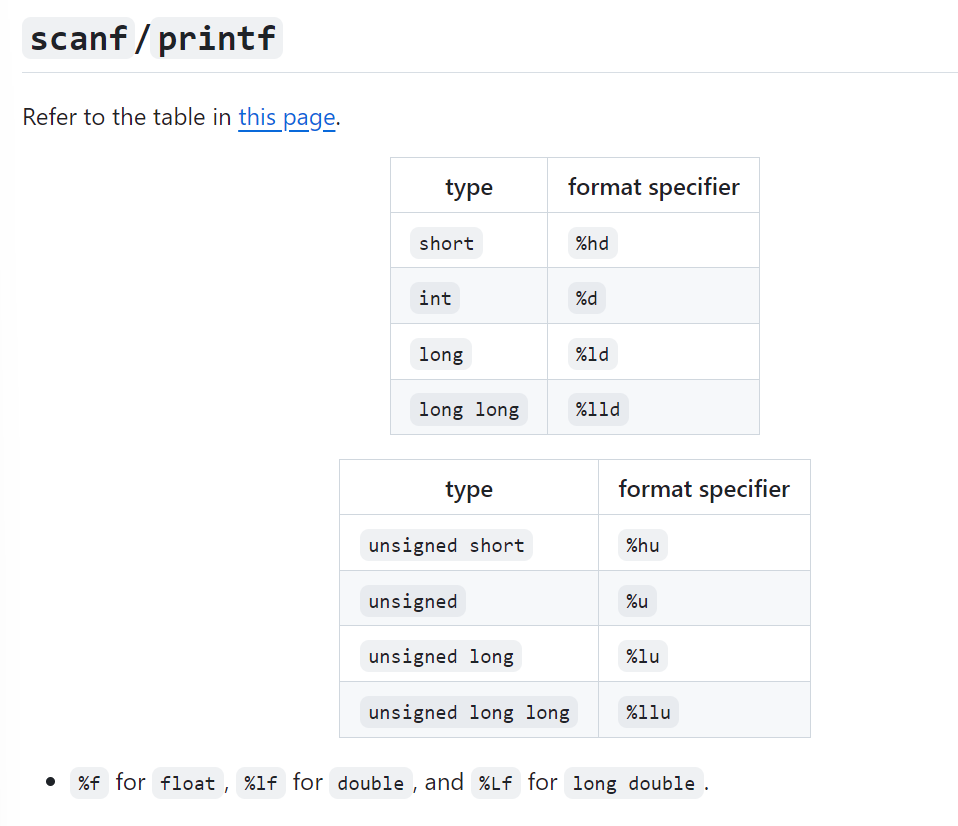
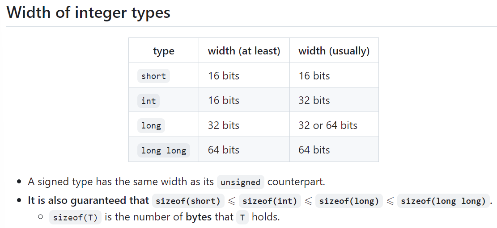
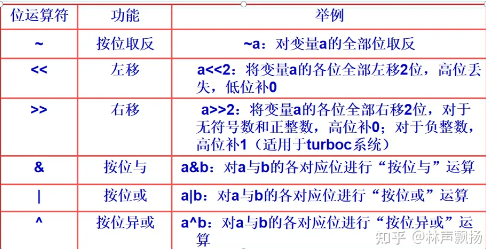
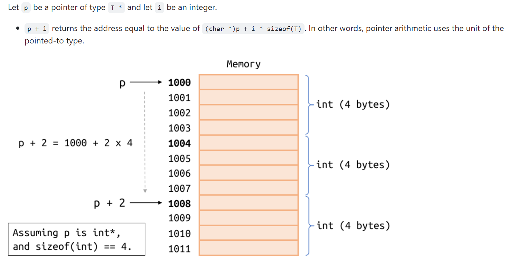
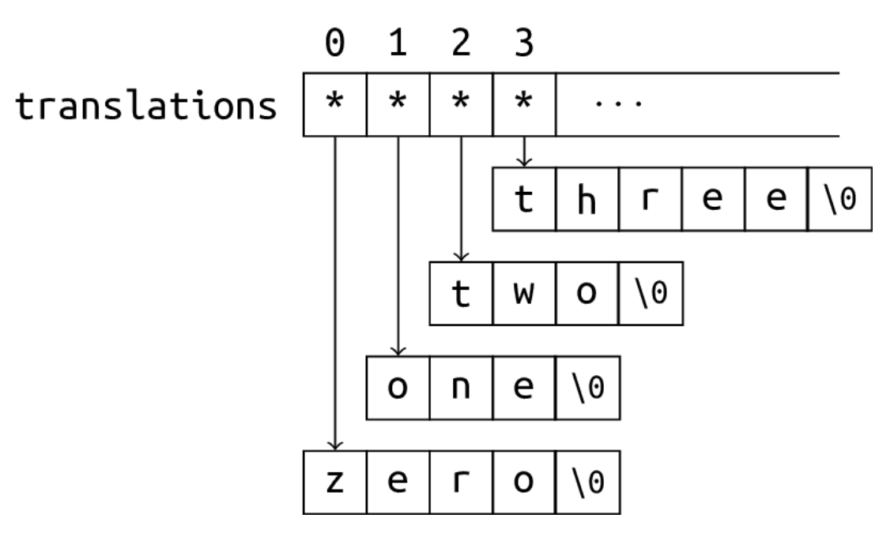
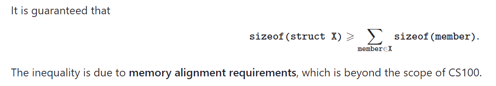
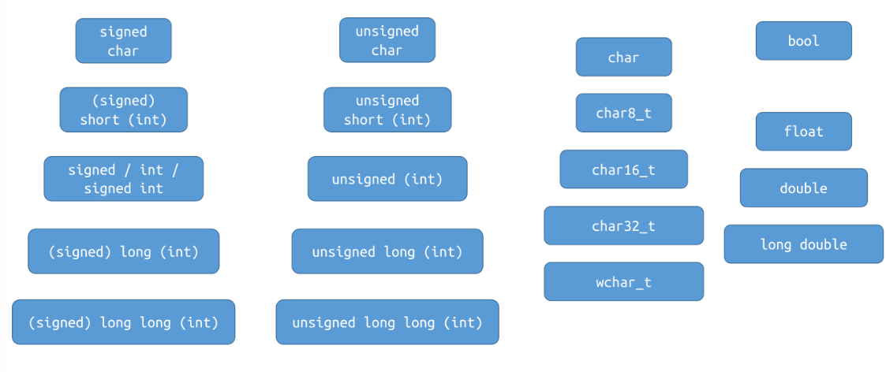

C拾遗
本笔记旨在拾遗自学过程中没有涉及到的上课的内容
程序框架
-
Why is
#include <stdio.h>needed? -
scanfandprintfare declared in the standard library header filestdio.h. -
What does
int main(void)mean? -
The
mainfunction is where the program starts.intis the return type andvoidindicates that this function accepts no arguments. -
What is the meaning of
return 0; ? Can it be omitted? -
A program returns
0if it exits successfully. Themainfunction of C will executereturn 0automatically at the end if we don't write it explicitly.
也就是说，return 0可以省略，我们不写的话，程序跑完也会自动返回0
- How do we represent a newline?
'\n'.- What does %d mean?
- Indicates that the type of the data being read or printed is
int. - How are whitespaces handled when reading integers with scanf?
- When reading
intwith%dinscanf, leading whitespaces are ignored.
scanf
scanf("%d%d", &a, &b); 中的占位符%d：
%d will skip any leading whitespaces.
- "whitespace" refers to the character that looks "blank": space
' ', newline'\n, tab'\t', etc.
会跳过space 换行符 制表符

variable declaration
Every variable in C has a type.
- The type is fully deterministic and cannot be changed.
- The type is known even when the program is not run
- ⇔ The type is known at compile-time. 编译阶段就知道type了！
- ⇔ C is statically-typed 1. ⇔ C has a static type system.
- In contrast, Python is dynamically-typed.
“编译阶段就知道”这个东西其实是十分重要的！之后还会体提及
而变量声明在function内能声明局部变量，在任何函数体之外声明，能够声明全局变量
Arithmetic type
八位（bit）是一个字节（byte）
Boolean
原先一直在<stdbool.h>里面，而自从C23就不用加这个头文件了
在C99之前，没有true false，直接用int的1和0
integer
那么关于整数的表示范围，假设一个整数数据类型有n bits，那么分为有符号signed 和无符号 unsigned
- If the type is signed, the range of values that can be represented is [−2^n-1,2^n-1 −1].
- If the type is unsigned, the range of values that can be represented is [0,2^n −1].
因为表示符号需要最前面的数字表示正负
那么数据类型对应的字节是多少呢？ 首先我们来看命名
- The keyword
intis optional in types other thanint: - e.g.
short intandshortname the same type. - e.g.
unsigned intandunsignedname the same type. - "Unsigned-ness" needs to be written explicitly:
unsigned int,unsigned long, ... - Types without the keyword
unsignedare signed by default: - e.g.
signed intandintname the same type. - e.g.
signed long int,signed long,long intandlongname the same type.
unsigned不会省略，signed会； short, long, long long 其实原来都是用来修饰int的
那么占用多少字节呢？

可以发现，只有long int 和 int类型是implementation-defined
In addition: Implementation-defined behaviors
The standard states that the exact width of the integer types is implementation-defined.
- Implementation: The compiler and the standard library.
- An implementation-defined behavior depends on the compiler and the standard library, and is often also related to the hosted environment (e.g. the operating system).
floating type
float : 4字节 double : 8字节 long double: 精度和范围至少比double好
float的指数范围为-127 ~ 128，而double的指数范围为-1023 ~ 1024（double更精确些）
float和double的精度是由尾数的位数来决定的
float：2^23 = 8388608，一共七位，这意味着最多能有7位有效数字，但绝对能保证的为6位，也即float的精度为6~7位有效数字；
double：2^52 = 4503599627370496，一共16位，同理，double的精度为15~16位。
无论是单精度还是双精度在存储中都分为三个部分： 符号位(Sign) : 0代表正，1代表为负 指数位（Exponent）:用于存储科学计数法中的指数数据，并且采用移位存储 尾数部分（Mantissa）：尾数部分
Use double for real floating-point arithmetic by default. Don't worry about efficiency! double arithmetic is not necessarily slower than float.
注意：不要用floating-point type于integer arithmetic, 否则返回的就是浮点数（隐式转换）
character type
The C standard provides three different character types: signed char, unsigned char and char.
但是无论是哪一种，一定都是一个字节，四位表示范围：
signed char : -128 - 127 unsigned char : 0 - 255 (都是闭区间)
字符对应的就是ASCII码
但是值得注意的是： Whether char is signed or unsigned is implementation-defined.
If char is signed (unsigned), it represents the same set of values as the type signed char (unsigned char), but they are not the same type. （相反，如果是short int long longlong, 那么前面加signed其实没区别）
技巧： 如何将一个char 表示的0-9的数（ASCII中是48-57）转化为int呢？
c
char c = '5';
int a = c - '0'; // 正确，发生隐式转换
int b = c - 48; // 正确
// 可以把结果直接付给int, 因为在 C 语言中，char 类型的变量实际上是整数类型，只是它们通常被解释为字符而不是数字。因此，将字符 '0' 到 '9' 赋给 int 变量时，实际上是将它们的 ASCII 值赋给了 int 变量，ASCII 值恰好与相应的数字值相同。
隐式转换
在进行加减乘除之类的计算之前，其实都会发生一次隐形的类型转换，使得最终它们都是同一个类型
常见的有：
If any one operand is of floating-point type and the other is an integer, the integer will be implicitly converted to that floating-point type. 有一个是浮点数，那么其他整数都会转化为浮点数
Similarly, if the operands are of types int and long long, the int value will be implicitly converted to long long, and the result type is long long. 即使都是整数，假如说一个是int 一个是long long， 那么int也会转化为long long, 最终返回值的类型也是long long
可见，转换都会往更为严苛的方向转换
而除法就更为特殊：
Assume a and b are of the same type T (after conversions as mentioned above).
- Then, the result type is also
T.
Two cases:
- If
Tis a floating-point type, this is a floating-point division. - If
Tis an integer type, this is an integer division. 而且结果总是向零取整！(truncated toward zero)
remainder： a % b, 两个必须是相同的整数类型
overflow
If a signed integer type holds a value that is not in the valid range, overflow is caused.
Suppose int is 32-bit and long long is 64-bit.
int ival = 100000; long long llval = ival;
int result1 = ival * ival; // (1) overflow , int
long long result2 = ival * ival; // (2) overflow , 右边算式是int, ”一瞬间“overflow
long long result3 = llval * ival; // (3) not overflow, 右边是long long int
long long result4 = llval * ival * ival; // (4) not overflow
注意，是否溢出跟右边算式有关系。看似很多都是相同的乘法，但是事实上隐式转换非常重要！
* is left-associative, so the expression a * b * c is interpreted as (a * b) * c.
但是同时一一个非常有趣的点: unsigned integers never overflow 永远会用上确界取模()
Bit Operation
十进制的数字在内存中是以二进制储存的，而二进制在C里面可以直接进行位运算

取反运算“~”是一个单目运算符, 运算规则为： ~1=0 ~0=1
# include <stdio.h>
int main()
{
unsigned char a=18,b;
b=~a;
printf(“~a=%u”,b);
return 0;
} // 237
首先是%u和%d的区别，前者允许是负数，而%d会取模变成正数，而且取的模还是跟数据类型内存相关；然后就是char and unsigned char的区别了，如果是无符号的那么就是正常的转换然后输出，必定是整数；但是如果是signed, 那么转化的时候，排头的数字不变，然后剩余的部分先减一然后再全部取反，然后再以第一个为符号位，输出数字（signed根本）
10010011，即十进制的-19（signed）
左移运算“<<”是一个双目运算符，左移运算的功能是将一个数据所有位向左移若干位，左边（高位）移出的部分舍去，右边（低位）自动补零。
右移运算“>>”是一个双目运算符，右移运算的功能是将一个数据所有位向右移若干位，右边（低位）移出的部分舍去，左边（高位）移入的二进制数分两种情况：对于无符号数和正整数，高位补0；对于负整数，高位补1
按位“与”运算符要求有两个运算量，其功能是将两个运算量的各个相应位分别进行“与”运算。
按位“或”运算符要求有两个运算量，其功能是将两个运算量的各个相应位分别进行“或”运算。
运算规则为: 1|1=1 0|1=1 1|0=1 0&0=0
按位“异或”运算符要求有两个运算量，其功能是将两个运算量的各个相应位分别进行“异或”运算
Undefined behavior
The C language standard precisely specifies the observable behavior of C language programs, except for the ones in the following categories:
-
undefined behavior - there are no restrictions on the behavior of the program. Examples of undefined behavior are memory accesses outside of array bounds, signed integer overflow, null pointer dereference, modification of the same scalar more than once in an expression without sequence points, access to an object through a pointer of a different type, etc. Compilers are not required to diagnose undefined behavior (although many simple situations are diagnosed), and the compiled program is not required to do anything meaningful. 超数组、超数据类型内存上限、空指针解引用、不同类型指针去指向一个变量、使用一个没有初始化的变量
-
unspecified behavior - two or more behaviors are permitted and the implementation is not required to document the effects of each behavior. For example, order of evaluation, whether identical string literals are distinct, etc. Each unspecified behavior results in one of a set of valid results and may produce a different result when repeated in the same program. (Unspecified 也算是 Undefined)
-
implementation-defined behavior - unspecified behavior where each implementation documents how the choice is made. For example, number of bits in a byte, or whether signed integer right shift is arithmetic or logical.
-
locale-specific behavior - implementation-defined behavior that depends on the currently chosen locale. For example, whether islower returns true for any character other than the 26 lowercase Latin letters.
(Note: Strictly conforming programs do not depend on any unspecified, undefined, or implementation-defined behavior)
The compilers are required to issue diagnostic messages (either errors or warnings) for any programs that violates any C syntax rule or semantic constraint, even if its behavior is specified as undefined or implementation-defined or if the compiler provides a language extension that allows it to accept such program. Diagnostics for undefined behavior are not otherwise required.
一个好的C程序应该没有任何undefined behavior； 而undefined behavior means "everything is possible"
i = ++i + i++; // undefined behavior
i = i++ + 1; // undefined behavior
printf("%d, %d\n", i, i++); // undefined behavior
Operator
Unless otherwise stated, the order in which the operands are evaluated is unspecified.
- We will see that
&&,||and?:(and also,, in recitations) have specified evaluation order of their operands.
Examples: In the following expressions, it is unspecified whether f is called before g.
f() + g()f() == g()
有上面这个结论，有： Let A and B be two expressions. The behavior is undefined if
- the order in which
AandBare evaluated is unspecified, and - both
AandBmodify an object, or one modifies an object and the other uses its value.
i = ++i + i++; // undefined behavior 因为前面后后面的表达式无法确定谁先谁后（不是从左到右，因为这里其实是两个函数）而这两个表达式都是尝试修改i的； 当然如果一个是改i，另一个是用i，那么也是undefined
Comparison operators are binary operators that test a condition and return 1 if that condition is logically true and 0 if it is logically false.
Note: Comparison operators in C cannot be chained.
Example: a < b < c is interpreted as (a < b) < c (due to left-associativity), which means to
- compare
(a < b)first, whose result is either0or1, and then - compare
0 < cor1 < c.
指针与数组
小技巧：如何避免解引用空指针：
if (ptr != NULL && *ptr == 42) { /* ... */ } 如果是空指针，那么右边的解引用不会进行，因为左边一判断完就知道不必再看左边了
A pointer that does not point to an existing object may be
- uninitialized (wild), or
- a null pointer, or
- dangling (We will discuss this in later lectures.), or
- holding some other meaningless address:
int *p = 123;
Dereferencing such a pointer is undefined behavior, and usually causes severe runtime errors.
If an array is declared without explicit initialization:
- Global or local
static: Empty-initialization ⇒ Every element is empty-initialized. - Local non-
static: Every element is initialized to indeterminate values (uninitialized).
int main(void) {
int a[10] = {1, 2, 3}; // a[3], a[4], ... are all initialized to zero.
int b[100] = {0}; // All elements of b are initialized to zero.
int c[100] = {1}; // c[0] is initialized to 1,
// and the rest are initialized to zero.
}
Nested Arrays: (初始化有很多方法)
int a[4][3] = { // array of 4 arrays of 3 ints each (4x3 matrix)
{ 1 }, // row 0 initialized to {1, 0, 0}
{ 0, 1 }, // row 1 initialized to {0, 1, 0}
{ [2]=1 }, // row 2 initialized to {0, 0, 1}
}; // row 3 initialized to {0, 0, 0}
int b[4][3] = { // array of 4 arrays of 3 ints each (4x3 matrix)
1, 3, 5, 2, 4, 6, 3, 5, 7 // row 0 initialized to {1, 3, 5}
}; // row 1 initialized to {2, 4, 6}
// row 2 initialized to {3, 5, 7}
// row 3 initialized to {0, 0, 0}
int y[4][3] = {[0][0]=1, [1][1]=1, [2][0]=1}; // row 0 initialized to {1, 0, 0}
// row 1 initialized to {0, 1, 0}
// row 2 initialized to {1, 0, 0}
// row 3 initialized to {0, 0, 0}
Pointer arithmetic:

这里p+1中的1代表的是1个字节，四位
Let p be a pointer of type T * and let i be an integer.
p + ireturns the address equal to the value of(char *)p + i * sizeof(T). In other words, pointer arithmetic uses the unit of the pointed-to type.- If we let
p = &a[0](where a is an array of type T [N]), then p + iis equivalent to&a[i], and*(p + i)is equivalent toa[i].
Pointer arithmetic can only happen within the range of an array and its "past-the-end" position (indexed [0,N-1]). For other cases, the behavior is undefined.
Examples of undefined behaviors:
p1 - p2, wherep1andp2point to the positions of two different arrays.p + 2 * N, whereppoints to some element in an array of lengthN.p - 1, whereppoints to the first elementa[0]of some arraya.
Note that the evaluation of the innocent-looking expression p - 1, without dereferencing it, is still undefined behavior and may fail on some platforms.
Considering the close relationship between arrays and pointers, an array can be implicitly converted to a pointer to the first element: a → &a[0], T [N] → T \*.
p = &a[0]can be written asp = adirectly.*ais equivalent toa[0].
上面就涉及到了数组指针的退化，也就涉及到了： how to pass an array to a function:
void fun(int *a);
void fun(int a[]);
void fun(int a[10]);
void fun(int a[2]);
Return an array? Sorry, there is no way to return a n array from a function. 返回地址倒是可以，但是一定要注意：
int *foo(void) {
int a[10] = {0};
return a;
}
类似于这样的事情不能发生！虽然说返回的其实是指针，但是这个数组开辟在栈区，函数调用结束，数组就释放了，那么返回的指针也就变成了野指针！解引用就undifined behavior
Pointer to array:
A pointer to an array of N ints:
int (*parr)[N];
An array of N pointers (pointing to int):
int *arrp[N];
int (*parr)[N]has a pair of parentheses around * and parr, soparris a pointer (*), and- points to something of type
int[N]. - Then the other one is different:
arrpis an array, and- stores
Npointers, with pointee typeint.
Passing a nested array to a function:
void fun(int (*a)[N]); // recommanded, for its convenient format
void fun(int a[][N]);
void fun(int a[2][N]);
void fun(int a[10][N]);
The parameter is of type int (*)[N], which is a pointer to int[N].
We can pass an array of type int[K][N] to fun, where K is arbitrary.
- The size for the second dimension must be N.
T[10]andT[20]are different types, so the pointer typesT(*)[10]andT(*)[20]are not compatible.
In each of the following declarations, what is the type of a? Does it accept an argument of type int[N][M]?
void fun(int a[N][M]): A pointer toint[M]. Yes.void fun(int (*a)[M]): Same as 1.void fun(int (*a)[N]): A pointer toint[N]. Yes iffN == M.void fun(int **a): A pointer toint *. No.void fun(int *a[]): Same as 4.void fun(int *a[N]): Same as 4.void fun(int a[100][M]): Same as 1.void fun(int a[N][100]): A pointer toint[100]. Yes iffM == 100
void * 指针： A special pointer type:
- Any pointer can be implicitly converted to that type.
- A pointer of type void * can be implicitly converted to any pointer type.
- This must happen explicitly in C++.
Use printf("%p", ptr); to print the value of a pointer ptr of type void *.
- If
ptris a pointer of some other type, a conversion is needed printf("%p", (void *)ptr);
void * is often used to represent "pointer to anything", "location of some memory", or even "any object".
Dynamic memory
Create an "array" whose size is determined at runtime? 编译阶段就需要知道数组的详细信息，包括数组元素数量和数据类型
- We need a block of memory, the size of which can be determined at runtime.
- If we run out of memory, we need to know.
- We may require a pretty large chunk of memory.
Using malloc and free and calloc
Declared in <stdlib.h>.
void *malloc(size_t size);
Allocates size bytes of uninitialized storage on heap.
If allocation succeeds, returns the starting address of the allocated memory block.
If allocation fails, a null pointer is returned.
- size_t: A type that can hold the size (number of bytes) of any object. It is
- declared in
<stddef.h>, and - is an unsigned integer type,
- whose size is implementation-defined. For example, it may be 64-bit on a 64-bit machine, and 32-bit on a 32-bit machine.
T *ptr = malloc(sizeof(T) * n); // sizeof(T) * n bytes
for (int i = 0; i != n; ++i)
ptr[i] = /* ... */
// Now you can use `ptr` as if it points to an array of `n` objects of type `T`
// ...
free(ptr); // to avoid memory leak
In addition: There is no need to do a null check before calling free!（如果是空指针，free函数不会做任何事情）
读取只需要：scanf("%s", str), 因为str已经是指针了
重点！重复释放是一种Undefined behavior
Create a "2-d array" on heap?
int **p = malloc(sizeof(int *) * n);
for (int i = 0; i < n; ++i)
p[i] = malloc(sizeof(int) * m); // p已经能当数组用了；p中每一个元素是一个地址；这句话使得地址指向的也是一个“数组”
for (int i = 0; i < n; ++i)
for (int j = 0; j < m; ++j)
p[i][j] = /* ... */ // 已经能当二维数组使用指针了
// ...
for (int i = 0; i < n; ++i)
free(p[i]);
free(p); // 释放也是逐级释放
但是也需要注意：要释放就整体完全释放，不能只释放一部分
C 库函数 void *calloc(size_t nitems, size_t size) 分配所需的内存空间，并返回一个指向它的指针。malloc 和 calloc 之间的不同点是，malloc 不会设置内存为零(不会进行初始化)，而 calloc 会设置分配的内存为零（空初始化）。
void *calloc(size_t nitems, size_t size), 参数第一个是分配的元素个数，第二个是元素的大小；该函数返回一个指针，指向已分配的内存。如果请求失败，则返回 NULL。
String
C does not have a special construct for "string".
A string is a sequence of characters stored contiguously. We often use an array or a pointer to the first character to represent a string.
- It can be stored in an array, or in dynamically allocated memory.
- It must be null-terminated: There should be a null character
'\0'at the end.
char s[10] = "abcde"; // s = {'a', 'b', 'c', 'd', 'e', '\0'}
printf("%s\n", s); // prints abcde
printf("%s\n", s + 1); // prints bcde , +1代表全体前移一位后的结果，a扔掉了
s[2] = ';'; // s = "ab;de"
printf("%s\n", s); // prints ab;de
s[2] = '\0';
printf("%s\n", s); // prints ab
第三行其实是一个小技巧，解题中可能会使用
The position of the first '\0' is the end of the string. Anything after that is discarded.
Every standard library function that handles strings will search for '\0' in that string.
- If there is no
'\0', they will search nonstop, and eventually go out of range (undefined behavior).
char s[5] = "abcde"; // OK, but no place for '\0'.
printf("%s\n", s); // undefined behavior (missing '\0')
-
%s in scanf matches a sequence of non-whitespace characters.
-
Leading whitespaces are discarded. // 开头的''空格''（whitespace）都省略掉
- Reading starts from the first non-whitespace character, and stops right before the next whitespace character. // 在下一个whitespace停止读取
'\0'will be placed at the end. // 而且最后会将一个/0紧接着读取内容被读取进去（见下例）
Suppose the input is 123 456:
char str[100] = "abcdef";
scanf("%s", str); // Reads "123". `str` becomes {'1', '2', '3', '\0', 'e', 'f'}
printf("%s\n", str); // Prints "123".
// 'e' and 'f' are not considered as part of the string.
上面这种读法明显太麻烦而且害怕超上限
gets reads a string without bounds checking. It has been removed since C11.
- An alternative for
getsthat does bounds checking isgets_s, but not supported by every compiler.
The best alternative: fgets. It is more portable, more generic, and safer (with bounds checking).
char str[100];
fgets(str, 100, stdin);
**puts(str)**: Prints the string str, followed by a newline.
String manipulation / examination
Some common standard library functions: declared in <string.h>.
strlen(str): Returns the length of the stringstr.strcpy(dest, src): Copies the stringsrctodest.strcat(dest, src): Appends a copy ofsrcto the end ofdest.strcmp(s1, s2): Compares two strings in lexicographical order.strchr(str, ch): Finds the first occurrence ofchinstr.
This page is only a brief introduction which cannot be relied on. The detailed documentations can be found here.
更多函数细节见下：
Implement your own strlen, which accepts a pointer to the first character of a string and returns its length.
size_t my_strlen(const char *str) { // const加入是为了保证不对输入的string进行改变
size_t ans = 0; // 当作指针对待
while (*str != '\0') { // 解引用后发现不是'\0'
++ans;
++str; // 这里自动加的就是数据类型的字节数
}
return ans;
}
size_t my_strlen(const char *str) {
const char *end = str; // 当作数组对待，用一个指针指向它
while (*end != '\0')
++end;
return end - str; // 解引用后发现是'\0'的地址减去首地址，又由于char内存是1字节
}
size_t my_strlen(const char *str) {
size_t ans = 0;
while (*str++ != '\0') // Understand and learn to use this.
++ans; // 注意是先str后++，指的是先判断，然后再地址+1
return ans;
}
如果想要一个指针指向string, 那么最好用const char , 因为string的字符串类型其实是const char*
换而言之，字符串常量存放在常量区而非栈区
那么想通过指针来字符串其实是不可能的； 但是通过malloc返回的指针是可以的，因为其实指针操控的内存在堆区
Using a pointer to non-const to point to a string literal is allowed in C (not allowed in C++), but very dangerous:
char *p = "abcde"; // OK
p[3] = 'a'; // No compile-error, but undefined behavior,
// and possibly severe runtime-error.
Correct ways: Use low-level constness to protect it:
const char *str = "abcde";
str[3] = 'a'; // compile-error
Or : Copy the content into an array instead of using a pointer pointing to it
char arr[] = "abcde";
arr[3] = 'a'; // OK.
// `arr` contains a copy of "abcde".
Array of strings
const char *translations[] = {
"zero", "one", "two", "three", "four",
"five", "six", "seven", "eight", "nine"
};
translationsis an array of pointers, where each pointer points to a string literal.translationsis not a 2-d array!

Summary:
A C-style string is a sequence of characters stored contiguously, with '\0' at the end.
- Never forget the null character
'\0'. - String literals are not modifiable, even though their types are not const
- It's better to use a pointer to
constto point to a string literal. - I/O:
scanf/printf,fgets,puts - String manipulation / examination functions like
strlen,strcmp,strcpy, ... - Conversions to and from numeric formats:
strtol,strtoll, ...
Read a string of unknown length
Suppose we want to read a sequence of non-whitespace characters, the length of which is unknown.
- Use
malloc/freeto allocate and deallocate memory dynamically. - When the current buffer is not large enough, we allocate a larger one and copies the stored elements to it!
char *read_string(void) {
// 先获取非空白的字符们：
char c = getchar();
while (isspace(c))
c = getchar();
// 如果跳出了循环，说明c不是whitespace了
char *buffer = malloc(INITIAL_SIZE);
int capacity = INITIAL_SIZE;
int cur_pos = 0; // The index at which we store the input character.
while (!isspace(c)) { // 只要不遇到下一个whitespace：
if (cur_pos == capacity - 1) { // `-1` is for '\0'.恰好放不下'\0'的时候：
char *new_buffer = malloc(capacity * 2);
memcpy(new_buffer, buffer, cur_pos); // copy everything we have stored
// to the new buffer
free(buffer); // !!!!!!!!!!!
capacity *= 2;
buffer = new_buffer;
// 为什么不用free new_buffer? 其实两个是指针，buffer指针对应的内存释放了
// 而new_buffer对应的空间是更新后的，所以让buffer指针指向new_buffer指向的内存
// 而new_buffer这个指针会随着while不断更新，但最后函数调用结束的时候，new_buffer
// 会被释放掉（这个地址存放在栈区），buffer也是如此，只不过是释放前return出去了
// 而buffer对应的内存在堆区不会在函数结束的时候被释放
}
buffer[cur_pos++] = c;
c = getchar();
}
// Now, `c` is a whitespace. This is not part of the contents we need.
ungetc(c, stdin); // Put that whitespace back to the input.
buffer[cur_pos] = '\0'; // Remember this!!!
return buffer; // buffer代表的就是内存块的首地址
}
int main(void) {
char *content = read_string();
puts(content); // 用puts函数打印，更方便
free(content); // 释放content，防止memory leak
}
阶段性查漏补缺
- 用malloc为字符串开辟内存的时候无条件预留好'\0'的位置：
char* str = malloc(sizeof(char) * (len + 1))
- 开辟好内存之后，如何读取：
scanf("%s", str)就可以了
- ASCII码中不是所有的都是字符！有很多命令或转义的！只有33-126是！
- 产生随机数字：
# include <time.h>
int main (void){
time_t t;
srand((unsigned) time(&t)); // 初始化
a = rand() % ?; // ?代表你想取模多少从而达到生成数字的范围
}
- 一些代码欣赏：
// 计算字符串的长度
size_t hw3_strlen(const char *str) {
// 找到不能够解引用的地址，两个地址之间就是长度
// 因为char的大小就是1个字节
const char *st = str;
while (*st != '\0'){ // 查到NULL（空）就停止循环
st++;
}
return st - str; // 两个地址之间的差就是字符串长度
}
// 在字符串中查找字符
char *hw3_strchr(const char *str, int ch) {
// Pointer to the found character in str, or null pointer if no such character is found.
while (*str && *str != ch){
str++; // 解引用后不是NULL，而且发现不是ch
}
return (*str == ch) ? (char *)str : NULL;// 如果解引用指向了ch,返回它； 不是的话，返回空指针
// 使用了三目运算符进行简化。。。
}
// 复制字符串
char *hw3_strcpy(char *dest, const char *src) {
char *ptr = dest; // 这个ptr会移动，而dest不动，就是为了方便返回dest
// 这理应是常见手法
while (*src !='\0') {// 可以解引用，就复制
*ptr = *src;
ptr++;
src++;
}
*ptr = '\0'; // 添加字符串结束符
return dest;
}
// 连接字符串
char *hw3_strcat(char *dest, const char *src) {
char *ptr = dest;
while (*ptr != '\0'){
ptr++; // 现在ptr知道了尾部
}
while (*src != '\0') {// 可以解引用，就复制
*ptr = *src;
ptr++;
src++;
}
*ptr = '\0'; // 在目标字符串末尾添加字符串结束符
return dest;
}
// 比较两个字符串
int hw3_strcmp(const char *lhs, const char *rhs) {
while (*lhs && *rhs && *lhs == *rhs) {
lhs++;
rhs++;
} // 相同情况：都能解引用且两个都相同
// 如果跳出了循环，说明要么有一个是NULL, 要么字符不相同
if (*lhs == '\0' && *rhs == '\0'){
return 0;
}
if (*lhs == '\0' || *rhs == '\0'){
if (*lhs == '\0'){
return -1;
}
else{
return 1;
}
}
return *lhs - *rhs;
}
- 作业3prob4中的精华：
void explain_std(char* xxx) {
// 要注意判断的顺序。。。
if (strncmp(xxx, "c++", 3) == 0) {
printf("-std=%s: Set the language standard to %s%s.\n", xxx, "ISO C++", xxx + 3);
}
else if (strncmp(xxx, "c", 1) == 0) {
printf("-std=%s: Set the language standard to %s%s.\n", xxx, "ISO C", xxx + 1);
}
else if (strncmp(xxx, "gnu++", 5) == 0) {
printf("-std=%s: Set the language standard to %s%s.\n", xxx, "GNU dialect of C++", xxx + 5);
}
else if (strncmp(xxx, "gnu", 3) == 0) {
printf("-std=%s: Set the language standard to %s%s.\n", xxx, "GNU dialect of C", xxx + 3);
}
}
// other
void explain_file(char* file) {
char* type;
const char *last_dot = strrchr(file, '.'); // 找到最后一个.的位置
// 注意判断顺序。。。e.g. 如果先是看h， 那么hpp hxx的判断根本不会轮到他们
if (strncmp(last_dot, ".cpp", 4) == 0 || strncmp(last_dot, ".C", 2) == 0 ||
strncmp(last_dot, ".cc", 3) == 0 || strncmp(last_dot, ".cxx", 4) == 0) {
type = "C++ source code";
}
else if (strncmp(last_dot, ".hpp", 4) == 0 || strncmp(last_dot, ".hxx",4) == 0) {
type = "C++ header file";
}
else if (strncmp(last_dot, ".c", 2) == 0) {
type = "C source code";
}
else if (strncmp(last_dot, ".h", 2) == 0) {
type = "C/C++ header file";
}
printf("%s: %s as input file.\n", file, type);
}
int main(int argc, char* argv[]) {
for (int i = 1; i < argc; i++) {
if (strcmp(argv[i], "-Wall") == 0) {
explain_Wall();
}
else if (strcmp(argv[i], "-Wpedantic") == 0) {
explain_Wpedantic();
}
else if (strcmp(argv[i], "-Wextra") == 0) {
explain_Wextra();
}
else if (strcmp(argv[i], "-Werror") == 0) {
explain_Werror();
}
else if (strcmp(argv[i], "-o") == 0 ) {
explain_output(argv[i + 1]);
i++; // 要看下下个argv[]了
}
else if (strcmp(argv[i], "-I") == 0 ) {
explain_include(argv[i + 1]);
i++;
}
else if (strncmp(argv[i], "-std=", 5) == 0) { // 发现前五个字符是-std=
explain_std(argv[i] + 5); // 指针+5， 跳过 "-std="
}
else {
explain_file(argv[i]);
}
}
return 0;
}
- 谜一样的调用顺序：
printf("%d, %d\n", f(), g())， 对于这句话来说，我不知道是f函数先调用还是g，但是能确定的是，两个都调用完毕之后，才会打印
- 打印字符串是否换行？
const char *s = "hello";
printf("%s\n", s); // %s打印不会自动换行
puts(s); // puts函数会自动换行
puts("hello");
char str[5] = "hello";
printf("%s\n", str);
// 这段代码有问题，应该str[6]从而留下'\0' ； 或者直接str[]，编译器会自己确定大小，并且确保留下了'\0'
// str将会代表数组的首地址，所以可以用在%s输出里面
- 读取string
char str[10];
fgets(str, 10, stdin);
- If the input is
aaabbbcccdwith a newline at the end, what is the content of the stringstr?
"aaabbbccc"
- If the input is
aaabbbcccwith a newline at the end, what is the content of the stringstr?
''aaabbbccc''
- If the input is
aaabbbccwith a newline at the end, what is the content of the stringstr?
''aaabbbcc\n''
上面这三个问题中可以看出：一定会预留'\0', 而且它不算content of the string
但是一旦，就像第三问，读进了换行符，那么这些都算作是content of the string, i.e. '\0'不配是
- If we change
fgets(str, 10, stdin);toscanf("%s", str);and the input isaaabbbcccdwith a newline at the end, what is the content of the stringstr?
The program has undefined behavior! fgets能够确保预留，但是scanf不能！一旦没留位置就是undefined behavior
- 无论如何，只有
free(T *ptr)可以正确释放内存 void *malloc(size_t size);这个函数返回的是void, 并不代表返回的是void, 而是void*类型是一种通用指针类型，可以指向任何类型的数据。这种设计使得malloc函数可以在不知道具体数据类型的情况下分配内存，并返回一个指向该内存的指针。 而如果分配失败，并不是程序崩溃，而是返回NULL*
struct
A struct is a type consisting of a sequence of members whose storage is allocated in an ordered sequence.
Simply put, place several things together to form a new type.
Unlike C++, the keyword struct here is necessary.
Use obj.mem, the member-access operator . to access a member.
struct Student stu;
stu.name = "Alice";
stu.id = "2024533000";
stu.entrance_year = 2024;
stu.dorm = 8;
printf("%d\n", student.dorm);
++student.entrance_year;
puts(student.name);
在定义完之后，也可以malloc一块地方存放一个struct的实例，返回一个struct ? *类型的指针
struct Student *pStu = malloc(sizeof(struct Student));
Member access through a pointer: ptr->mem, or (*ptr).mem (not *ptr.mem!).
As usual, don't forget to free after use.
What is the value of sizeof(struct Student)? 其实这并不是简单的每个成员的数据类型的内存相加就完事儿了

What happens if an object of struct type is not explicitly initialized?
struct Student gStu;
int main(void) {
struct Student stu;
}
- Global or local
static: "empty-initialization", which performs member-wise empty-initialization. // 每个成员逐个空初始化 - Local non-
static: every member is initialized to indeterminate values (in other words, uninitialized).
Explicit initialization
struct Student stu = {.name = "Alice", .id = "2024533000",
.entrance_year = 2024, .dorm = 8}; // designator, recommended!
struct Student *student_list = malloc(sizeof(struct Student) * n);
for (int i = 0; i != n; ++i) {
student_list[i].name = A(i); // A, B, C and D are some functions
student_list[i].id = B(i);
student_list[i].entrance_year = C(i);
student_list[i].dorm = D(i);
}
// 这里的指针拓展为了“数组”，每一个地址都是一个指针，指向了一个实例
void print_student(struct Student s) {
printf("Name: %s, ID: %s, dorm: %d\n", s.name, s.id, s.dorm);
}
print_student(student_list[i]);
struct Student s = student_list[i]; // 实例创造实例，copy关系
特殊的地方： Although an array cannot be copied, an array member can be copied.
The copy of an array is element-wise copy.
int a[10];
int b[10] = a; // Error!
struct A a;
struct A b = a; // OK
A struct is a type consisting of a sequence of members.
- Member access:
obj.mem,ptr->mem(equivalent to(*ptr).mem, but better) sizeof(struct A), no less than the sum of size of every member.- But not necessarily equal, due to memory alignment requirements.
- Implicit initialization: recursively performed on every member.
- Initializer-lists, designators, compound literals.
- Copy of a
struct: member-wise copy. - Argument passing and returning: copy.
Recurssion——递归
引子 ： 计算n!
int factorial(int n) {
int result = 1;
for (int i = 1; i <= n; ++i)
result *= i;
return result;
}
但是其实可以一行代码解决，破局点就是 n! = (n-1)! * n
int factorial(int n) {
return n == 0 ? 1 : n * factorial(n - 1);
}
注意这里为什么要三目运算符！为的就是到最后要停止递归
第二个例子： 打印一个正整数 只有putchar()函数
void print(unsigned x) {
if (x >= 10)
print(x / 10);
putchar(x % 10 + '0');
}
注意逻辑关系！不是先putchar！这一个点其实就是python算法里面提到的递归的问题，这里不再复述（尤其是那张图）
第三个例子——selection sort
void sort_impl(int *a, int k, int n) {
if (k == n - 1)
return; // 终止条件： 范围仅仅是列表中的最后一个数字，一个数字自然是范围里面最小的
int m = k;
for (int i = k + 1; i < n; ++i)
if (a[i] < a[m])
m = i;
swap(&a[m], &a[k]); // the "swap" function we defined in previous lectures
sort_impl(a, k + 1, n); // sort the rest part recursively
}
void sort(int *a, int n) {
sort_impl(a, 0, n);
}
//其中，k代表“范围”，范围内找到最小的并且置顶于范围顶部； m是用来找到最小的数字的
回顾C
type
C is a statically-typed language! 数据类型要在编译阶段就能全部明白

1 == sizeof(char) <= sizeof(short) <= sizeof(int) <= sizeof(long) <= sizeof(long long)-
sizeof(signed T) == sizeof(unsigned T)for everyT -
shortandintare at least 16 bits.longis at least 32 bits.long longis at least 64 bits. - Whether
charis signed or not is implementation-defined. - Signed integer overflow is undefined behavior.
- Unsigned arithmetic never overflows**: It is performed modulo 2^N, where N is the number of bits of that type.
Pointer Type:
- For
T≠U,T *andU *are different types. - The value of a pointer of type
T *is the address of an object of typeT. - Null pointer: The pointer holding the null pointer value, which is a special value indicating that the pointer is "pointing nowhere".
- A null pointer can be obtained from
NULL. - 创建一个指针但是不用的时候，最好先初始化为空指针
&varreturns the address ofvar. The return type is pointer to the type ofvar.- Only when a pointer is actually pointing to an object is it dereferenceable.
*ptr, whereptris not dereferenceable, is undefined behavior.
Array types
ElemType [N]
T [N],U [N]andT [M]are different types forT≠UandN≠M.Nshould be compile-time constant. Otherwise it is a VLA.- Valid index range: [0,N). Subscript out of range is undefined behavior.
- Decay:
a→&a[0],T [N]→T *. // 退化现象：（自动代表首元素地址）
Pointer to array: T (*)[N]. Array of pointers: T *[N].
int arr1[5] = {1, 2, 3, 4, 5};
int *ptr1 = arr1; // Pointer to array
int *arr2[5]; // Array of pointers
for (int i = 0; i < 5; i++) {
arr2[i] = &arr1[i]; // Assign the address of each element in arr1 to arr2
}
初始化：
- Brace-enclosed list initializer for arrays and
structs:= { ... }. - Designators for arrays:
= {[3] = 5, [7] = 4} - Designators for
structs:= {.mem1 = x, .mem2 = y}.
If a variable is declared without explicit initializer:
- For global or local static variables, they are empty-initialized:
0for integer types,+0.0for floating-point types,- null pointer value for pointer types.
- For local non-
staticvariables, they are uninitialized, holding indeterminate values.
These rules apply recursively to the elements of arrays and the members of structs.
Any use of the value of an uninitialized variable is undefined behavior.
expression and arithmetics
-
If the evaluation order of
AandBis unspecified, and if -
both
AandBcontain a write to an object, or - one of them contains a write to an object, and the other one contains a read to that object
then the behavior is undefined.
Bitwise operators: ~, &, |, ^, <<, >>
- Pointer arithmetic uses the units of the pointed-to type.
p + i == (char *)p + i * sizeof(*p)- Pointer arithmetic must be performed within an array (including its past-the-end position), otherwise the behavior is undefined.
Member access through pointer: ptr->member, which is equivalent to (*ptr).member.
.has higher precedence than*, so the parentheses around*ptrare necessary.
Function
-
Argument passing:
-
Use the argument to initialize the parameter.
- The semantic is copy.
- Decay always happens: One can never declare an array parameter.
// 想传入数组，只能传入首地址
The main function:
int main(void) { ... }int main(int argc, char **argv) { ... }, for passing command-line arguments./* another implementation-defined signature */
Return value: 0 to indicate that the program exits successfully.
argc代表的是命令行右边参数数量+1， 因为argv[]列表的第一个是没有用的！因此：遍历列表应该范围是：for(i = 1; i < argc ; i++)
例子：手搓vector
vector 应该是一个struct, 因为一个vector有一个列表和一个维度
struct Vector {
double *entries;
size_t dimension;
};
struct Vector create_vector(size_t n) {
return (struct Vector){.entries = calloc(n, sizeof(double)),
.dimension = n};//designator
}
void destroy_vector(struct Vector *vec) {
free(vec->entries);
// Do we need to free(vec)? 其实不必，.dimension会程序运行结束的时候自动释放
}
// deep copy of vector
struct Vector v = something();
struct Vector u = v;
destroy_vector(&u);
destroy_vector(&v); // undefined behavior: double free!
// u = v将内存全部复制过去了！相当于两个指针指向了同一个内存
void vector_assign(struct Vector *to, const struct Vector *from) {
// 加const好习惯
if (to == from)
return; // 自己复制给自己，什么说法？ 应该判断输入的两个指针（地址）是不是相同的！
free(to->entries); // Don't forget this!!
to->entries = malloc(from->dimension * sizeof(double));
memcpy(to->entries, from->entries, from->dimension * sizeof(double));
// void *memcpy(void *str1, const void *str2, size_t n)
to->dimension = from->dimension;
}
bool vector_equal(const struct Vector *lhs, const struct Vector *rhs) {
if (lhs->dimension != rhs->dimension)
return false;
for (size_t i = 0; i != lhs->dimension; ++i)
if (lhs->entries[i] != rhs->entries[i])
return false;
return true;
} // <stdbool.h>
// For vector_add, our design is to claim that "the behavior is undefined if the vectors have different dimensions".
struct Vector vector_add(const struct Vector *lhs, const struct Vector *rhs) {
assert(lhs->dimension == rhs->dimension);
// ASSERT ()是一个调试程序时经常使用的宏，在程序运行时它计算括号内的表达式，如果表达式为FALSE (0), 程序将报告错误，并终止执行。如果表达式不为0，则继续执行后面的语句
struct Vector result = create_vector(lhs->dimension);
for (size_t i = 0; i != lhs->dimension; ++i)
result.entries[i] = lhs->entries[i] + rhs->entries[i];
return result;
}
struct Vector vector_scale(const struct Vector *lhs, double scale) {
struct Vector result = create_vector(lhs->dimension);
for (size_t i = 0; i != lhs->dimension; ++i)
result.entries[i] = lhs->entries[i] * scale;
return result;
}
double vector_dot_product(const struct Vector *lhs, const struct Vector *rhs) {
assert(lhs->dimension == rhs->dimension);
double result = 0;
for (size_t i = 0; i != lhs->dimension; ++i)
result += lhs->entries[i] * rhs->entries[i];
return result;
}
double vector_norm(const struct Vector *vec) {
return sqrt(vector_dot_product(vec, vec));
}
double vector_distance(const struct Vector *lhs, const struct Vector *rhs) {
struct Vector diff = vector_minus(lhs, rhs); // Define this on your own.
return vector_norm(&diff);
}
void print_vector(const struct Vector *vec) {
putchar('(');
if (vec->dimension > 0) {
printf("%lf", vec->entries[0]);
for (size_t i = 1; i != vec->dimension; ++i)
printf(", %lf", vec->entries[i]);
}
putchar(')');
}
就此，即将进入C++的世界...
C++拾遗
基础
#include <iostream>
int main() {
int a, b;
std::cin >> a >> b;
std::cout << "a + b = " << a + b
<< '\n';
return 0;
}
- For input: There is no need to take the address of
aandb! C++ has a way to obtain the reference of the argument. -
There is no need to write
%d! C++ has a way of identifying the type of the argument, and will select the correct way to handle that type. -
std::cinandstd::cout: two objects defined in the standard library file<iostream>. They are not functions!
The input and output "functions" are actually the operators << and >>, which are overloaded to do something different from bit shifting.
C++ has a large standard library with a lot of names declared.
To avoid name collisions, all the names from the standard library are placed in a namespace named std.
- You can write
using std::cin;to introducestd::cininto the current scope, so thatcincan be used withoutstd::. - You may write
using namespace std;to introduce all the names instdinto the current scope, but you will be at the risk of name collisions again.
String
std::string Defined in the standard library file <string>
std::string str = "Hello world";
// equivalent: std::string str("Hello world");
// equivalent: std::string str{"Hello world"}; (modern)
std::cout << str << std::endl;
std::string s1(7, 'a');
std::cout << s1 << std::endl; // aaaaaaa
std::string s2 = s1; // s2 is a copy of s1
std::cout << s2 << std::endl; // aaaaaaa
std::string s; // "" (empty string)
Member function s.size() s.empty()
Concatenation:
- No need to care about the memory allocation.
- No awkward functions like
strcat.
std::string s1 = "Hello";
std::string s2 = "world";
std::string s3 = s1 + ' ' + s2; // "Hello world"
s1 += s2; // s1 becomes "Helloworld"
s2 += "C++string"; // s2 becomes "worldC++string"
At least one operand of + should be std::string.
const char *old_bad_ugly_C_style_string = "hello";
std::string good_beautiful_Cpp_string = "hello";
std::string s1 = good_beautiful_Cpp_string + "aaaaa"; // OK.
std::string s2 = "aaaaa" + good_beautiful_Cpp_string; // OK.
std::string s3 = old_bad_ugly_C_style_string + "aaaaa"; // Error
In C, a = a + b is equivalent to a += b. This is not always true in C++.
For two std::strings s1 and s2, s1 = s1 + s2 is different from s1 += s2.
s1 = s1 + s2constructs a temporary objects1 + s2(so that the contents ofs1are copied), and then assigns it tos1.s1 += s2appendss2directly to the end ofs1, without copyings1.
Try these with n = 1000000:
std::string result;
for (int i = 0; i != n; ++i)
result += 'a'; // Fast
std::string result;
for (int i = 0; i != n; ++i)
result = result + 'a'; // Very slow
string IO: cin输入字符串的时候，在遇到“whitespace”的时候会停止读取，因为这些字符视为输入的结束符
-
getline读取换行符 并且将换行符替换成'\0'，并且会丢弃换行符
-
cin会把换行符留在输入队列中
-
cin.getline读取换行符并替换成'\0'，并且不会主动丢弃换行符，会把它留在输入队列中
Conversion between strings and arithmetic numbers ： 在python中梦寐以求实现的函数：
int ival = 42;
double dval = 3.14;
std::string s = std::to_string(ival) + std::to_string(dval);
std::cout << s << '\n'; // Possible output: 423.140000
Reference（引用）
A reference defines an alternative name for an object ("refers to" that object). (别名)
ReferredTypeis the type of the object that it refers to, and&is the symbol indicating that it is a reference
int ival = 42;
int &ri = ival; // `ri` refers to `ival`.
// In other words, `ri` is an alternative name for `ival`.
std::cout << ri << '\n'; // prints the value of `ival`, which is `42`.
++ri; // Same effect as `++ival;`.
int ival = 42;
int x = ival; // `x` is another variable.
++x; // This has nothing to do with `ival`.
std::cout << ival << '\n'; // 42
int &ri = ival; // `ri` is a reference that refers to `ival`.
++ri; // This modification is performed on `ival`.
std::cout << ival << '\n'; // 43
起别名不是赋值，因此能起别名的一定是一个内存稳定的变量
int &r1 = 42; // Error: binding a reference to a literal
int &r2 = 2 + 3; // Error: binding a reference to a temporary object
int a = 10, b = 15;
int &r3 = a + b; // Error: binding a reference to a temporary object
当然，别名是一个不稳定的变量(not an object)，因此不能给别名起别名;不能给它上指针
int ival = 42;
int &ri = ival; // binding `ri` to `ival`.
int & &rr = ri; // Error! No such thing!
int ival = 42;
int &ri = ival; // binding `ri` to `ival`.
int &*pr = &ri; // Error! No such thing!
应用：
for (std::size_t i = 0; i != str.size(); ++i) {
char &c = str[i];
c = std::toupper(c); // Same as `str[i] = std::toupper(str[i]);`.
}
// the same as:
for (char &c : str) // 从str里面依次拿字符
c = std::toupper(c);
int count_lowercase(std::string str) {
int cnt = 0;
for (char c : str)
if (std::islower(c))
++cnt;
return cnt;
}
// the same as:
int count_lowercase(std::string &str) { // `str` is a reference.
int cnt = 0;
for (char c : str)
if (std::islower(c))
++cnt;
return cnt;
}
第一个代码里面的区别：一个是逐个拿出来，copy并判断；另一个是直接引用，并判断
事实上引用会更快，因为copy是非常耗时间的；第二个代码类似
告诉一个道理：引用传递是非常不错的选择！直接无copy操纵参数（而不是形参传递）
Benefits of passing by reference-to-const
- Avoids copy.
- Accepts temporaries and literals (rvalues).
- The
constqualification prevents accidental modifications to it.
References vs pointers
A reference
- is not itself an object. It is an alias of the object that it is bound to.
- cannot be rebound to another object after initialization.
- has no "default" or "zero" value. It must be bound to an object.
A pointer
- is an object that stores the address of the object it points to.
- can switch to point to another object at any time.
- can be set to a null pointer value
nullptr.
Both a reference and a pointer can be used to refer to an object, but references are more convenient - no need to write the annoying * and &.
Note: nullptr is the null pointer value in C++. Do not use NULL.
std::vector
Defined in the standard library file <vector>.
std::vector<int> v; // `v` is of type `std::vector<int>
std::vector is not a type itself. It must be combined with some <T> to form a type.
std::vector v; // Error: missing template argument.
std::vector<int> vi; // An empty vector of `int`s.
std::vector<std::string> vs; // An empty vector of strings.
std::vector<double> vd; // An empty vector of `double`s.
std::vector<std::vector<int>> vvi; // An empty vector of vector of `int`s.
// "2-d" vector.
What are the types of vi, vs and vvi?
std::vector<int>,std::vector<std::string>,std::vector<std::vector<int>>.
std::vector<int> v{2, 3, 5, 7}; // A vector of `int`s,
// whose elements are {2, 3, 5, 7}.
std::vector<int> v2 = {2, 3, 5, 7}; // Equivalent to ↑
std::vector<std::string> vs{"hello", "world"}; // A vector of strings,
// whose elements are {"hello", "world"}.
std::vector<std::string> vs2 = {"hello", "world"}; // Equivalent to ↑
std::vector<int> v3(10); // A vector of ten `int`s, all initialized to 0.
std::vector<int> v4(10, 42); // A vector of ten `int`s, all initialized to 42.
Copy assignment is also enabled:
std::vector<int> v1 = something(), v2 = something_else();
v1 = v2;
- Element-wise copy is performed automatically.
- Memory is allocated automatically. The memory used to store the old data of
v1is deallocated automatically.
v.size() and v.empty(): same as those on std::string.
Append an element to the end of a std::vector v.push_back(x)
int n;
std::cin >> n;
std::vector<int> v;
for (int i = 0; i != n; ++i) {
int x;
std::cin >> x;
v.push_back(x);
}
std::cout << v.size() << '\n'; // n
Remove the last element of a std::vector v.pop_back()
v.back()andv.front()
Return the references to the last and the first elements, respectively.
It is a reference, through which we can modify the corresponding element.
For v.back(), v.front() and v.pop_back(), the behavior is undefined if v is empty. They do not perform any bounds checking.
C in C++
bool, true and false are built-in. No need to #include <stdbool.h>. true and false are of type bool, not int. bool类型内嵌了，方便使用
The return type of logical operators &&, ||, ! and comparison operators <, <=, >, >=, ==, != is bool, not int. 这很符合python直觉，更好了
The type of string literal "hello" is const char [N+1], not char [N+1]
Recall that string literals are stored in read-only memory. Any attempt to modify them results in undefined behavior*. 字符串常量存放在常量区，但是类型是const char， 提醒你不能modify！
The type of character literals 'a' is char, not int. C中，char的实质就是int, 用ASCII码对应
const variables initialized with literals are compile-time constants. They can be used as the length of arrays. ：
const int maxn = 1000;
int a[maxn]; // a normal array in C++, but VLA in C
C里面需要创建数组的时候，成员数量立马知道；但是C++不用担心，传参是OK的
同时，类型转化有更保障的checking, 例如long long 转化为int, 这种有风险的转换，都会报错！
同时指针类型转化也是不被运行的：
const int x = 42, *pci = &x;
int *pi = pci; // Warning in C, Error in C++
// 为什么是错的？因为int是const, pci 是const int*没问题，但是pi是int *, 有通过这个指针修改const的潜在风险
++*pi; // undefined behavior
char *pc = pi; // Warning in C, Error in C++
void *pv = pi; char *pc2 = pv; // Even no warning in C! Error in C++.
int y = pc; // Warning in C, Error in C++
- For
T≠U,T *andU *are different types. Treating aT *asU *leads to undefined behavior in most cases, but the C compiler gives only a warning! void *is a hole in the type system. You can cast anything to and from it without even a warning.
但是如果我就是想要发生转化呢？
C++ provides four named cast operators:
static_cast<Type>(expr)const_cast<Type>(expr)reinterpret_cast<Type>(expr)dynamic_cast<Type>(expr)⇒ will be covered in later lectures.
In contrast, the C style explicit cast (Type)expr looks way too innocent.
static_cast<Type>(expr)
int ival = 42;
const int &cref = ival; // 引用是“上锁的”
int &ref = cref; // Error: casting away low-level constness
int &ref2 = const_cast<int &>(cref); // OK
int *ptr = const_cast<int *>(&cref); // OK
However, modifying a const object through a non-const access path (possibly formed by const_cast) results in undefined behavior!
const int cival = 42;
int &ref = const_cast<int &>(cival); // compiles, but dangerous
++ref; // undefined behavior (may crash)
变量可变，但是引用上锁，那么解锁其实无伤大雅；但是变量上锁，用const引用然后解锁，试图改变，那么这就是非常危险的
const_cast<Type>(expr)
Often used to perform conversion between different pointer types (DANGEROUS):
int ival = 42;
char *pc = reinterpret_cast<char *>(&ival);
We must never forget that the actual object addressed by pc is an int, not a character! Any use of pc that assumes it's an ordinary character pointer is likely to fail at run time, e.g.:
std::string str(pc); // undefined behavior
static_cast
Other types of conversions (which often look "harmless"):
double average = static_cast<double>(sum) / n;
int pos = static_cast<int>(std::sqrt(n));
static_cast<std::string &&>(str) // converts to a xvalue
static_cast<Derived *>(base_ptr) // downcast without runtime checking
auto & decltype
When declaring a variable with an initializer, we can use the keyword auto to let the compiler deduce the type.
auto x = 42; // `int`, because 42 is an `int`.
auto y = 3.14; // `double`, because 3.14 is a `double`.
auto z = x + y; // `double`, because the type of `x + y` is `double`.
auto m; // Error: cannot deduce the type. An initializer is needed.
// auto can also be used to produce compound types:
auto &r = x; // `int &`, because `x` is an `int`.
const auto &rc = r; // `const int &`.
auto *p = &rc; // `const int *`, because `&rc` is `const int *`.
auto str = "hello"; // `const char *`
- Recall that the type of
"hello"isconst char [6], notstd::string. This is for compatibility with C. - When using
auto, the array-to-pointer conversion ("decay") is performed automatically.
auto sum(int x, int y) {
return x + y;
} // The return type is deduced to int.
Some types in C++ are not known to anyone but the compiler:
auto lam = [](int x, int y) { return x + y; } // A lambda expression.
Every lambda expression has its own type, whose name is only known by the compiler.
auto fun(int a, int b) { // The return type is deduced to be `int`.
std::cout << "fun() is called.\n"
return a + b;
}
int x = 10, y = 15;
decltype(fun(x, y)) z; // Same as `int z;`.
// Unlike `auto`, no initializer is required here.
// The type is deduced from the return type of `fun`.
函数重载
int fun(int);
double fun(int); // Error: functions that differ only in
// their return type cannot be overloaded.
// 必须在传参类型上面有所区别
void fun(int *a);
void fun(int (&a)[10]); // 引用传入数组！！！
int ival = 42; fun(&ival); // OK, calls fun(int *)
int arr[10]; fun(arr); // Error: ambiguous call
// 因为数组既能匹配int (&a)[10], 也能退化为指针，符合int *a
-
- For
fun(int (&)[10]), this is an exact match.
- For
- For
fun(int *), this involves an array-to-pointer implicit conversion. We will see that this is also considered an exact match.
但是有的时候貌似并不是完美匹配，那么匹配规则是什么呢
void fun(int);
void fun(double);
void fun(int *);
void fun(const int *);
int ival = 42;
// fun(int *) or fun(const int *)?
fun(&ival);
fun('a'); // fun(int) or fun(double)?
fun(3.14f); // fun(int) or fun(double)?
fun(NULL); // fun(int) or fun(int *)?
fun(&ival)matchesfun(int *)fun('a')matchesfun(int)fun(3.14f)matchesfun(double)fun(NULL)? We will see this later.
一般： char (如果没有函数接受char) -> int; 指针（没有规定是不是const）->匹配非const指针
No need to remember all the details. But pay attention to some cases that are very common.
Null Pointer
In C++, NULL cannot be (void *)0 since the implicit conversion from void * to other pointer types is not allowed.
- It is most likely to be an integer literal with value zero.
- With the following overload declarations,
fun(NULL)may callfun(int)on some platforms, and may be ambiguous on other platforms!
void fun(int);
void fun(int *);
fun(NULL); // May call fun(int),
// or may be ambiguous.
C里面的NULL其实may be defined as (void *)0, 0, (long)0 or other forms.
但是C++里面规定了，就专门有null pointer：
nullptr: has a unique type std::nullptr_t (defined in <cstddef>), which is neither void * nor an integer.
fun(nullptr) will definitely match fun(int *).
Range-based for loops revisited
vector<int> vec;
vec.push_back(1);
vec.push_back(2);
for(int& i : vec)
{
// 增加vector对象中元素的值
i++;
}
for (int i : vec)
{
// 显示更新后的数值
cout << i << endl;
}
// 当然中间可以用continue结束本次循环，break跳出整个循环
注意，当在一个函数中传入了一个数列作为参数，数列会退化为指针，因此指针是不能基于范围循环遍历的
#include<iostream>
using namespace std;
//当数组作为函数参数时，数组名退化为指针，不能使用范围for
void fun(int arr[], int n)
{
for (const auto& e : arr)
{
cout << e << " ";
}
cout << endl;
}
// 上面这个就会发生错误，因为其实arr已经只是一个int * 类型的指针了
void test()
{
//范围for，当前的数据：循环范围
//也可以用continue结束本次循环，break跳出整个循环
//范围for的表示
int arr[] = { 1,2,3,4,5 };
for (int e : arr)
{
cout << e << " ";
}
cout << endl;
//引用
for (const int& e : arr)
{
cout << e << " ";
}
cout << endl;
//auto关键字
for (const auto& e : arr)
{
cout << e << " ";
}
cout << endl;
}
int main()
{
test();
return 0;
}
Class
const相关和this指针
class Student {
std::string name;
std::string id;
int entranceYear;
void setName(const std::string &newName) {
name = newName;
}
void printInfo() const {
std::cout << "I am " << name << ", id " << id
<< ", entrance year: " << entranceYear << std::endl;
}
// 上下两个方法都用了const关键词，代表函数执行的时候不能够修改对象里面的任何成员变量
bool graduated(int year) const {
return year - entranceYear >= 4;
}
};
// 为什么方法要const关键词？因为与const对象兼容！
// const对象只能调用const方法，不是const方法不能调用！
那么如何调用成员呢？
Student s = someValue();
s.printInfo(); // call its printInfo() to print related info
if (s.graduated(2023)) {
// ...
}
那么在c++里面，struct和class最大的区别是：前者成员默认公开，后者成员默认私有：Access Control!
This is one of the only two differences between struct and class in C++.
class Student {
private:
std::string name;
std::string id;
int entranceYear;
public:
void setName(const std::string &newName){
this->name = newName; // this->指针当然可以省略，但是最好加上
}
void printInfo() const;
bool graduated(int year) const;
};
关于const方法 ：
- A
constmember function cannot modify its data members 2. - A
constmember function guarantees that no data member will be modified. - A non-
constmember function does not provide such guarantee. - In a
constmember function, calling a non-constmember function on*thisis not allowed. - For a
constobject, onlyconstmember functions can be called on it.
应该尽可能地做到： 能加const就尽量加const，见下面这个例子：
class Student {
std::string name, id;
int entranceYear;
public:
const std::string &getName() const { return name; }
const std::string &getID() const { return id; }
bool valid() const { return id.substr(0, 4) == std::to_string(entranceYear); }
void adjustID() { id = std::to_string(entranceYear) + id.substr(4); }
};
可以通过公开的方法去修改私有变量
关于this pointer
There is a pointer called this in each member function of class X which has type X * or const X *, pointing to the object on which the member function is called.
Inside a member function, access of any member mem is actually this->mem.
We can also write this->mem explicitly.
class Student {
public:
bool graduated(int year) const {
return year - this->entranceYear >= 4;
}
}; // 这一点很像python中的self关键词
构造函数
Constructors define how an object can be initialized.
- Constructors are often overloaded, because an object may have multiple reasonable ways of initialization.
class Student {
std::string name;
std::string id;
int entranceYear;
public:
Student(const std::string &name_, const std::string &id_, int ey)
: name(name_), id(id_), entranceYear(ey) {}
Student(const std::string &name_, const std::string &id_)
: name(name_), id(id_), entranceYear(std::stoi(id_.substr(0, 4))) {}
};
Student a("Alice", "2020123123", 2020);
Student b("Bob", "2020123124"); // entranceYear = 2020
Student c; // Error: No default constructor. (to be discussed later)
上面有两个构造函数，但是传参的情况不同，因此是函数名字的重载，提供了多种的构造方式
其中 : name(name_), id(id_), entranceYear(ey) {}这种其实是成员初始化列表，直接初始化成员变量而不是赋值，当然函数体里面去赋值（in-class initialization）来初始化成员变量也是一种方法
The initializer list starts with :, and contains initializers for each data member, separated by ,. The initializers must be of the form (...) or {...}, not = ....
class Student {
std::string name = "Alice";
std::string id;
int entranceYear{2024}; // equivalent to `int entranceYear = 2024;`.
public:
Student() {} // `name` is initialized to `"Alice"`,
// `id` is initialized to an empty string,
// and `entranceYear` is initialized to 2024.
Student(int ey) : entranceYear(ey) {} // `name` is initialized to `"Alice"`,
// `id` is initialized to an empty string,
// and `entranceYear` is initialized to `ey`.
};
Data members are initialized in order in which they are declared, not the order in the initializer list.
- If the initializers appear in an order different from the declaration order, the compiler will generate a warning.
Typical mistake: entranceYear is initialized in terms of id, but id is not initialized yet!
那么既可以列表初始化，又能in-class initialization, 到底初始化的顺序是什么呢？ 如果两种初始化都有呢？
- First, before entering the function body,
name,idandentranceYearare default-initialized.nameandidare initialized to empty strings. - Then, the assignments in the function body take place.
Not all types can be default-initialized. Not all types can be assigned to. (Any counterexamples?)
- References
T &cannot be default-initialized, and cannot be assigned to. constobjects of built-in types cannot be default-initialized.constobjects cannot be assigned to.- A class can choose to allow or disallow default initialization or assignment. It depends on the design
那么可不可以设计一种默认的构造函数呢？ 当然是可以的，但是注意调用的时候的语法！
class Point2d {
double x, y;
public:
Point2d() : x(0), y(0) {} // default constructor
Point2d(double x_, double y_) : x(x_), y(y_) {}
};
Point2d p1; // calls default ctor, (0, 0)
Point2d p2(3, 4); // calls Point2d(double, double), (3, 4)
Point2d p3(); // Is this calling the default ctor?
Be careful! p3 is a function that takes no parameters and returns Point2d.
但是在下面这种情况，默认构造函数并没有被调用
// In this code, the default constructor of `Student` is not called.
std::vector<Student> students;
for (auto i = 0; i != n; ++i)
students.push_back(some_student());
当然，哪怕你没有写默认的初始化方法，那么依然有编译器为你提供的基础款
class X {}; // No user-declared constructors.
X x; // OK: calls the compiler-synthesized default constructor
当然，也可以在定义类的时候，制定默认的构造函数就是编译器基本款：
class Student {
public:
Student(const std::string &name_, const std::string &id_, int ey)
: name(name_), id(id_), entranceYear(ey) {}
Student(const std::string &name_, const std::string &id_)
: name(name_), id(id_), entranceYear(std::stoi(id_.substr(0, 4))) {}
Student() = default;
};
Constructor, Destrucotr, Copy Control
一个object的lifespan是什么？ 对于一个local non-static object来说：
- Starts on initialization
- Ends when control flow goes out of its scope.
例如在一个for的循环里面创建一个string, 那么在一轮循环结束的时候，创建的string就会释放
那么对于全局global object来说呢？
- Starts on initialization (before the first statement of
main) - Ends when the program terminates.
那么如果是一个开辟在栈区的object呢？
- Starts on initialization: A
newexpression will do this, butmallocdoes not! - Ends when it is destroyed: A
deleteexpression will do this, butfreedoes not!
那么什么是构造和析构方法呢？
A destructor of a class is the function that is automatically called when an object of that class type is destroyed.
struct A {
A() {
std::cout << 'c';
}
~A() {
std::cout << 'd';
}
};
// 输出cdcdcd
那么如何利用这种非常秒的属性来实现一些功能呢？（而不仅仅是局限于打印）
就比如说，创建的时候会自动malloc 内存，那么析构函数里面就可以free
那么构造函数呢？就是在接受参数（或者不接受参数触发默认构造函数）之后，进行的操作。 见下例：
class Dynarray {
int *m_storage;
std::size_t m_length;
public:
Dynarray(std::size_t n)
: m_storage(new int[n]{}), m_length(n) {}
~Dynarray() {
delete[] m_storage;} // Pay attention to `[]`!
std::size_t size() const {
return m_length;
}
bool empty() const {
return m_length != 0;
}
int &at(std::size_t i) {
return m_storage[i];
}
const int &at(std::size_t i) const {
return m_storage[i];
}
};
void print(const Dynarray &a) {
for (std::size_t i = 0;
i != a.size(); ++i)
std::cout << a.at(i) << ' ';
std::cout << std::endl;
}
void reverse(Dynarray &a) {
for (std::size_t i = 0,
j = a.size() - 1; i < j; ++i, --j)
std::swap(a.at(i), a.at(j));
} // 这一段关于reverse的代码非常漂亮
int main() {
int n; std::cin >> n;
Dynarray array(n);
for (int i = 0; i != n; ++i)
std::cin >> array.at(i);
reverse(array);
print(array);
return 0;
// Dtor of `array` is called here,
// which deallocates the memory
}
那么在string中，我们可以将一个string赋值给另一个。那么这就涉及到copy control
Dynarray a(3);
a.at(0) = 2; a.at(1) = 3; a.at(2) = 5;
Dynarray b = a; // It compiles.
print(b); // 2 3 5
a.at(0) = 70;
print(b); // 70 3 5
// 说明其实pointers a.m_storage and b.m_storage are pointing to the same address!
因此为了不会发生多指针指向的问题，可以在构造函数上面做文章——Copy Constructor
传入参数的时候，我就能传入一个class！
class Dynarray {
public:
Dynarray(const Dynarray &other); // const是为了保证不改变传进来的class实例
// 这里传入的是引用
: m_storage(new int[other.size()]{}), m_length(other.size()) {
// 上面列表初始化之后开始赋值，但是其实指针已经是不一样的了
for (std::size_t i = 0; i != other.size(); ++i)
m_storage[i] = other.at(i);
}
};
当然如果不详细地进行copy, 那么在这个构造函数声明的时候，可以直接用默认的
class Dynarray {
public:
Dynarray(const Dynarray &) = default;
// Explicitly defaulted: Explicitly requires the compiler to synthesize
// a copy constructor, with default behavior.
};
除了std::string s1(s2); 有的时候我们还可以： s1 = s2;
那么这又是如何实现的呢？ 这就需要运算符重载了（Copy-assignment operator）
class Dynarray {
public:
Dynarray &operator=(const Dynarray &other) {
delete[] m_storage; // !!!你原来可能就已经是拥有数据了
m_storage = new int[other.size()];
for (std::size_t i = 0; i != other.size(); ++i)
m_storage[i] = other.at(i);
m_length = other.size();
return *this;
}
};
这当然已经很好了，但是如果再刁钻一点：如果自己copy给自己呢？
class Dynarray {
public:
Dynarray &operator=(const Dynarray &other) {
int *new_data = new int[other.size()];
for (std::size_t i = 0; i != other.size(); ++i)
new_data[i] = other.at(i);
delete[] m_storage;
m_storage = new_data;
m_length = other.size();
return *this;
}
};
当然，copy constructor也有默认的版本供你选择，如果不定义的话，那么其实编译的时候就会把成员一个一个复制:
class Dynarray {
public:
Dynarray &operator=(const Dynarray &other) {
m_storage = other.m_storage;
m_length = other.m_length;
return *this;
}
};
// You can also require a synthesized one explicitly by saying = default;
在C++中，"the rule of three"（三法则）是指当你定义了一个类的析构函数、拷贝构造函数或拷贝赋值运算符中的任何一个时，通常需要同时定义这三个特殊成员函数。这是因为C++的默认行为可能不适用于自定义资源管理或对象的拷贝语义。
这三个特殊成员函数包括：
- 析构函数（
~ClassName()）：负责销毁对象并释放资源。如果类管理了动态分配的内存或其他资源，通常需要定义一个析构函数来正确地释放这些资源。 - 拷贝构造函数（
ClassName(const ClassName &)）：用于创建一个现有对象的副本。当对象通过值传递或作为某些函数的返回值时，编译器可能会自动生成一个临时对象，这时拷贝构造函数会被用到。 - 拷贝赋值运算符（
ClassName & operator=(const ClassName &)）：用于将一个对象的内容赋值给另一个对象，实现对象的深拷贝。
"the rule of three" 背后的原因是，如果你不显式地定义这些特殊成员函数，编译器将为你生成默认的版本，而这些默认版本可能不会正确地处理资源管理。例如，编译器生成的默认拷贝构造函数和拷贝赋值运算符会执行浅拷贝，这可能导致多重释放资源（如动态内存）的问题。
如果你定义了析构函数来释放资源，但没有定义拷贝构造函数和拷贝赋值运算符，那么在复制对象时，这些复制的对象将不会正确地管理资源，因为默认的拷贝构造函数和拷贝赋值运算符不会调用析构函数来释放资源。同样，如果你定义了拷贝构造函数或拷贝赋值运算符，但没有定义析构函数，那么在对象生命周期结束时，资源可能不会被释放。
因此，"the rule of three" 是一种指导原则，帮助你确保类的资源被正确管理，避免资源泄漏或其他与资源管理相关的问题。
从C++11开始，"the rule of three" 已经扩展为"the rule of five"，因为引入了两个额外的特殊成员函数：
- 移动构造函数（
ClassName(ClassName &&)） - 移动赋值运算符（
ClassName & operator=(ClassName &&)）
移动语义允许资源的转移，而不是复制，这在某些情况下可以提高性能。
Type alias members
有的时候数据类型我想换个名字，怎么实现？
// C-style
typedef long long LL;
// C++-style
using LL = long long;
// C-style
typedef int (&ref_to_array)[1000];
// C++-style
using ref_to_array = int (&)[1000];
A class can have type alias members.
class Dynarray {
public:
using size_type = std::size_t;
size_type size() const { return m_length; }
};
// Usage: ClassName::TypeAliasName, 因为是类下的
// 当然，这种类型别名也可以设计在private里面
All standard library containers (and std::string) define the type alias member size_type as the return type of .size():
int main() {
std::vector<int> vec = {1, 2, 3, 4, 5};
// 使用类型别名 size_type 来获取容器的大小
std::vector<int>::size_type size = vec.size();
// 这么用可以不用管容器内元素的数据类型是什么了
std::cout << "The size of the vector is: " << size << std::endl;
return 0;
}
static member
class A {
static int something;
// other members ...
};
There is only one A::something: it does not belong to any object of A. It belongs to the class A.
- Like type alias members, we use
ClassName::instead ofobject.to access them.
当然，也可以用实例去访问；只不过是不同的实例其实访问的都是一个变量。static member的生命周期和全局变量一样长
class Dynarray {
static int s_cnt; // !!!
int *m_storage;
std::size_t m_length;
int m_id;
public:
Dynarray(/* ... */) : /* ... */, m_id(s_cnt++) {}
};
而如果类里面有static 方法，那么其实这个定义在外面的方法没什么区别，只不过是调用的时候域名的类，而且方法的属性可能是Public也可能是private（当然可以类定义的时候说清楚）
class A {
public:
static void fun(int x, int y);
};
而且：There is no this pointer inside fun.
It can also be called by a.fun(x, y) (where a is an object of type A), but here a will not be bound to a this pointer, and fun has no way of accessing any non-static member of a.
友元
它允许非成员函数或者另一个类的成员函数访问类的私有（private）或保护（protected）成员。
友元不是类的成员，因此其实这个声明在任何地方都无所谓，而函数定义是在外部的
- We often declare all the
friends of a class in the beginning or at the end of class definition.
class Student {
friend void print(const Student &); // The parameter name is not used in this
// declaration, so it is omitted.
std::string m_name;
std::string m_id;
int m_entranceYear;
public:
Student(const std::string &name, const std::string &id)
: m_name(name), m_id(id), m_entranceYear(std::stol(id.substr(0, 4))) {}
auto graduated(int year) const { return year - m_entranceYear >= 4; }
// ...
};
void print(const Student &stu) {
std::cout << "Name: " << stu.m_name << ", id: " << stu.m_id
<< "entrance year: " << stu.m_entranceYear << '\n';
}
函数的声明
成员方法可以在外面定义，只不过需要加上::
class Widget {
public:
const std::vector<int> &get_gadgets() const; // A declaration only.
// ...
}; // Now the definition of `Widget` is complete.
// Define the function here. The function name is `Widget::get_gadgets`.
const std::vector<int> &Widget::get_gadgets() const {
return m_gadgets; // Just like how you do it inside the class body.
// The implicit `this` pointer is still there.
}
Rvalue References and Move
std::string a = some_value(), b = some_other_value();
std::string s;
s = a;
s = a + b; // 这是如何实现的？
- Evaluate
a + band store the result in a temporary object, saytmp. - Perform the assignment
s = tmp. - The temporary object
tmpis no longer needed, hence destroyed by its destructor.
Can we make this faster?
- The assignment
s = tmpis done by copying the contents oftmp? - But
tmpis about to "die"! Why can't we just steal the contents from it?
*** Define two different assignment operators, one accepting an lvalue and the other accepting an rvalue?**
左值是指在内存中有持久存储位置的对象，可以出现在赋值表达式的左边或右边。简单来说，左值就是有一个明确内存地址的变量。
右值是指那些不在内存中有持久存储位置的对象，通常是临时对象或字面量。右值不能出现在赋值表达式的左边，因为它们没有持久的内存地址。
左值引用可以绑定到左值上，也可以绑定到右值上（但这样会将右值转化为左值）。左值引用在变量名前使用&符号表示。
右值引用只能绑定到右值上，不能绑定到左值上。右值引用在变量名前使用两个&符号表示（&&）。
int &r = 42; // Error: Lvalue reference cannot be bound to rvalue.
int &&rr = 42; // Correct: `rr` is an rvalue reference.
const int &cr = 42; // Also correct:
// Lvalue reference-to-const can be bound to rvalue.
const int &&crr = 42; // Correct, but useless:
// Rvalue reference-to-const is seldom used.
int i = 42;
int &&rr2 = i; // Error: Rvalue reference cannot be bound to lvalue.
int &r2 = i * 42; // Error: Lvalue reference cannot be bound to rvalue.
const int &cr2 = i * 42; // Correct
int &&rr3 = i * 42; // Correct
void fun(const std::string &);
void fun(std::string &&);
// such overloading is allowed!
fun(s1 + s2)matchesfun(std::string &&), becauses1 + s2is an rvalue.fun(s)matchesfun(const std::string &), becausesis an lvalue.- Note that if
fun(std::string &&)does not exist,fun(s1 + s2)also matchesfun(const std::string &)
class Dynarray {
int *m_storage;
std::size_t m_length;
public:
Dynarray &operator=(Dynarray &&other) noexcept {
if (this != &other) {
// Self-assignment safe!
delete[] m_storage;
// Avoid memory leaks!
m_storage = other.m_storage; m_length = other.m_length;
// Steal the resources from other.
other.m_storage = nullptr; other.m_length = 0;
// Make sure other is in a valid state, so that it can be safely destroyed.
}
return *this;
}
Dynarray(const Dynarray &other) // copy constructor
: m_storage(new int[other.m_length]), m_length(other.m_length) {
for (std::size_t i = 0; i != m_length; ++i)
m_storage[i] = other.m_storage[i];
}
Dynarray(Dynarray &&other) noexcept // move constructor
: m_storage(other.m_storage), m_length(other.m_length) {
// Steal the resources of other, instead of making a copy.
other.m_storage = nullptr;
other.m_length = 0;
// Make sure other is in a valid state, so that it can be safely destroyed.
}
};
Like copy operations, we can use =default to require a synthesized move operation that has the default behaviors.
struct X {
X(X &&) = default;
X &operator=(X &&) = default;
};
- The synthesized move operations call the corresponding move operations of each member in the order in which they are declared.
- The synthesized move operations are
noexcept.
The Rule of Five
The updated copy control members: Define zero or five of them
- copy constructor
- copy assignment operator
- move constructor
- move assignment operator
-
destructor
-
The move constructor or the move assignment operator will not be generated 2 if any of the rest four members have a user-declared version.
- The copy constructor or copy assignment operator, if not provided by the user, will be implicitly
deleted if the class has a user-provided move operation. - The generation of the copy constructor or copy assignment operator is deprecated (since C++11) when the class has a user-declared copy operation or a destructor.
std::move Defined in <utility>
std::move(x) performs an lvalue to rvalue cast:
int ival = 42;
int &&rref = ival; // Error
int &&rref2 = std::move(ival); // Correct
std::move(x) indicates that we want to treat x as an rvalue, which means that x will be moved from.
The call to std::move promises that we do not intend to use x again,
- except to assign to it or to destroy it.
A call to std::move is usually followed by a call to some function that moves the object, after which we cannot make any assumptions about the value of the moved-from object.
"std::move does not move anything. It just makes a promise."
Suppose we give every Dynarray a special "label", which is a string.
class Dynarray {
int *m_storage;
std::size_t m_length;
std::string m_label;
public:
Dynarray(Dynarray &&other) noexcept
: m_storage(other.m_storage), m_length(other.m_length),
m_label(std::move(other.m_label)) { // !!
other.m_storage = nullptr;
other.m_length = 0;
}
}; // The standard library facilities ought to define efficient and correct move operations.
The lifetime of rvalues is often very short, compared to that of lvalues.
- Lvalues have persistent state, whereas rvalues are either literals or temporary objects created in the course of evaluating expressions.
An rvalue reference extends the lifetime of the rvalue that it is bound to.
Golden rule: Anything that has a name is an lvalue.
- The rvalue reference has a name, so it is an lvalue.
Since C++11, return result performs a move initialization of a temporary object, say tmp.
命名返回值优化NRVO：
Dynarray concat(const Dynarray &a, const Dynarray &b) {
Dynarray result(a.size() + b.size());
// ...
return result;
}
Dynarray a = concat(b, c); // Initialization
NRVO transforms this code to
// Pseudo C++ code.
void concat(Dynarray &result, const Dynarray &a, const Dynarray &b) {
// Pseudo C++ code. For demonstration only.
result.Dynarray::Dynarray(a.size() + b.size()); // construct in-place
// ...
}
Dynarray a@; // Uninitialized.
concat(a@, b, c);
so that no copy or move is needed.
Note:
- NRVO was invented decades ago (even before C++98).
- NRVO is an optimization, but not mandatory.
- Even if NRVO is performed, the move constructor should still be available.
- Because the compiler can choose not to perform NRVO.
- The program should be syntactically correct ("well-formed"), no matter how the compiler treats it.
smart pointer
For raw pointers obtained from new / new[] expressions, a manual delete / delete[] is required.
Idea: Make use of destructors. 不妨把指针变成一种class！
struct WindowPtr { // A "smart pointer".
Window *ptr;
WindowPtr(Window *p) : ptr(p) {}
~WindowPtr() { delete ptr; } // The destructor will `delete` the object.
};
Wrap the pointer into a class! When the control reaches the end of the scope in which the WindowPtr lives, the destructor of WindowPtr will be called automatically.
void runGame(const std::vector<Option> &options, const Settings &settings) {
WindowPtr pWindow(new Window(settings.width, settings.height, settings.mode));
if (/* condition1 */) {
// ...
return; // `pWindow` is destroyed automatically, with its destructor called.
}
// ...
// `pWindow` is destroyed automatically, with its destructor called.
}
这样当然不错，但是如果有两个这样的指针指向同一块内存，那岂不是双重释放了吗？
{
WindowPtr pWindow(new Window(settings.width, settings.height, settings.mode));
auto copy = pWindow; // `copy.ptr` and `pWindow.ptr` point to the same object!
} // The object is deleted twice! Disaster!
Possible behaviors of copy of a smart pointer:
- Copy the object. (Value semantics)
- Standard library containers. e.g.
std::string,std::vector,std::set, ... - Copy the pointer, but with some special design. (Pointer semantics)
std::shared_ptr<T>. Defined in standard library file<memory>.- Disable it. (Unique ownership)
std::unique_ptr<T>. Defined in standard library file<memory>.
The smart pointers std::shared_ptr<T>, std::unique_ptr<T> and std::weak_ptr<T> are the C++'s answer to garbage collection.
std::weak_ptris not covered in CS100.
Smart pointers support the similar operations as raw pointers:
*spreturns reference to the pointed-to object.sp->memis equivalent to(*sp).mem.spis contextually convertible tobool: It can be treated as a "condition".- It can be placed at the "condition" part of
if,for,while,dostatements. - It can be used as operands of
&&,||,!or the first operand of?:. - In all cases, the conversion result is
trueiffspholds an object (not "null").
[Best practice] In modern C++, prefer smart pointers to raw pointers.
接下来介绍std::unique_ptr 和 std::shared_ptr
std::unique_ptr
这个指针意味着： Unique ownership of the object
std::unique_ptr<T>是一种独占所有权智能指针，它拥有其指向的资源的唯一所有权，并且不能被复制或赋值给另一个unique_ptr（除非使用std::move进行移动语义）。当unique_ptr被销毁时，它所管理的资源也会被自动删除。
主要特点：
- 独占所有权：
std::unique_ptr拥有其指向的资源的唯一所有权，不能有其他unique_ptr共享同一资源。 - 自动内存管理：与
shared_ptr类似，当unique_ptr被销毁时，它会自动删除所管理的资源。 - 移动语义：
std::unique_ptr支持移动语义，可以将所有权从一个unique_ptr转移到另一个unique_ptr。 - 性能：由于没有引用计数的开销，
std::unique_ptr通常比std::shared_ptr更高效。
使用场景：
- 当资源只需要一个对象管理时。
- 当资源的生命周期明确，不需要跨对象共享时。
class WindowPtr {
Window *ptr;
public:
WindowPtr(Window *p = nullptr) : ptr(p) {}
~WindowPtr() { delete ptr; }
// 下面两种方法应该是不支持的！
WindowPtr(const WindowPtr &) = delete;
WindowPtr &operator=(const WindowPtr &) = delete;
WindowPtr(WindowPtr &&other) noexcept : ptr(other.ptr) { other.ptr = nullptr; }
WindowPtr &operator=(WindowPtr &&other) noexcept {
// transfer of ownership.
if (&other != this) {
delete ptr; ptr = other.ptr; other.ptr = nullptr;
}
return *this;
}
};
Like std::vector, std::unique_ptr is also a class template. It is not a type itself.
std::unique_ptr<PointeeType>is the complete type name, wherePointeeTypeis the type of the object that it points to.- For
T≠U,std::unique_ptr<T>andstd::unique_ptr<U>are two different and independent types.
例子：
std::unique_ptr<Student> p(new Student("Bob", 2020123123));
std::unique_ptr<Student> p1 = std::make_unique<Student>("Bob", 2020123123);
auto p2 = std::make_unique<Student>("Alice", 2020321321);
up is in the state that does not own any object.
- This is a defined and deterministic behavior! It is not holding some indeterminate value.
- The standard library hates indeterminate values, just as we do.
std::unique_ptr is not copyable, but only movable.
auto p = std::make_unique<std::string>(5, 'c');
std::cout << *p << std::endl; // Prints "ccccc".
auto q = p; // Error. Copy is not allowed.
auto r = std::move(p); // Correct.
// Now the ownership of this string has been transferred to `r`.
std::cout << *r << std::endl; // Prints "ccccc".
if (!p) // true
std::cout << "p is \"null\" now." << std::endl;
但是有的时候，我们也想要一个原版的指针来做一些事情：
// Given that `pWindow` is a `std::unique_ptr<Window>`.
auto p = pWindow; // Oops, attempting to copy a `std::unique_ptr`.
- If you want p to be just an observer, write
auto p = pWindow.get(); pWindow.get()returns a raw pointer to the object, which is of typeWindow *.- Be careful! As an observer,
pshould never interfere in the lifetime of the object. A simpledelete p;will cause disaster.
当然，返回一个std::unique_ptr也是很正常的：
struct Window {
// A typical "factory" function.
static std::unique_ptr<Window> create(const Settings &settings) {
auto pW = std::make_unique<Window>(/* some arguments */);
logWindowCreation(pW);
// ...
return pW;
}
};
auto state = Window::create(my_settings);
但是假如说array type, 那么是如何处理的呢？
By default, the destructor of std::unique_ptr<T> uses a delete expression to destroy the object it holds.
What happens if std::unique_ptr<T> up(new T[n]);?
- The memory is obtained using
new[], but deallocated bydelete! Undefined behavior.
见招拆招，有A template specialization: std::unique_ptr<T[]>.
但是通常情况下，Use standard library containers instead!； 、
std::unique_ptr<T[]> is seldom needed.
Zero-overhead: Using a std::unique_ptr does not cost more time or space than using raw pointers.
[Best practice] Use std::unique_ptr for exclusive-ownership resource management.
std::shared_ptr
A std::unique_ptr exclusively owns an object, but sometimes this is not convenient.
动机是什么？
Design a "shared-pointer" that allows the object it manages to be shared.
When should the object be destroyed?
- A
std::unique_ptrdestroys the object it manages when the pointer itself is destroyed. - If we allow many shared-pointers to point to the same object, how can we know when to destroy that object?
std::shared_ptr<T>是一种共享所有权智能指针，它允许多个shared_ptr实例共享同一资源。当最后一个引用该资源的shared_ptr被销毁或被释放时，资源会被自动删除。
主要特点：
- 引用计数：
std::shared_ptr内部使用引用计数机制来管理资源。每当有新的shared_ptr指向该资源时，引用计数增加；当一个shared_ptr被销毁或被reset时，引用计数减少。 - 自动内存管理：当引用计数降到0时，
std::shared_ptr会自动删除所管理的资源。 - 复制语义：
std::shared_ptr支持复制，复制构造函数和赋值操作符会增加引用计数，使得多个指针可以共享同一资源。 - 线程安全：引用计数的修改通常是线程安全的，但资源的访问需要程序员自行保证线程安全。
使用场景：
- 当资源需要在多个对象间共享时。
- 当资源的生命周期需要跨越多个函数或模块时。
By maintaining a variable that counts how many shared-pointers are pointing to the object, we can know when to destroy the object. It can prevent memory leak in many cases, but not all cases!
std::shared_ptr<Type> sp2(new Type(args));
auto sp = std::make_shared<Type>(args); // equivalent, but better
// sp points to a string "cccccccccc".
auto sp = std::make_shared<std::string>(10, 'c');
auto pWindow = std::make_shared<Window>(80, 24, my_settings.mode);
auto sp = std::make_shared<Type>(args); // preferred
std::shared_ptr<Type> sp2(new Type(args)); // ok, but less preferred
[Best practice] Prefer std::make_shared to directly using new when creating a std::shared_ptr.
* and -> can be used as if it is a raw pointer:
auto sp = std::make_shared<std::string>(10, 'c');
std::cout << *sp << std::endl; // "cccccccccc"
std::cout << sp->size() << std::endl; // "10"
sp.use_count(): The value of the reference counter.
auto sp = std::make_shared<std::string>(10, 'c');
{
auto sp2 = sp;
std::cout << sp.use_count() << std::endl; // 2
} // `sp2` is destroyed, but the managed object is not destroyed.
std::cout << sp.use_count() << std::endl; // 1
Operator Overloading
Overloaded operators can be defined in two forms:
- as a member function, in which the leftmost operand is bound to
this: a[i]⇔a.operator[](i)a = b⇔a.operator=(b)*a⇔a.operator*()f(arg1, arg2, arg3, ...)⇔f.operator()(arg1, arg2, arg3, ...)- as a non-member function:
a == b⇔operator==(a, b)a + b⇔operator+(a, b)
At least one operand should be a class type. Modifying the behavior of operators on built-in types is not allowed.
int operator+(int, int); // Error.
MyInt operator-(int, int); // Still error.
Inventing new operators is not allowed.
double operator**(double x, double exp); // Error.
Overloading does not modify the associativity, precedence and the operands' evaluation order.
std::cout << a + b; // Equivalent to `std::cout << (a + b)`.
例子:
class Rational {
int m_num; // numerator
unsigned m_denom; // denominator
void simplify() { // Private, because this is our implementation detail.
int gcd = std::gcd(m_num, m_denom); // std::gcd in <numeric> (since C++17)
m_num /= gcd; m_denom /= gcd;
}
friend Rational operator-(const Rational &); // Unary `operator-` as in `-x`.
public:
Rational &operator+=(const Rational &rhs) {
m_num = m_num * static_cast<int>(rhs.m_denom) // Be careful with `unsigned`!
+ static_cast<int>(m_denom) * rhs.m_num;
m_denom *= rhs.m_denom;
simplify();
return *this; // `x += y` should return a reference to `x`.
}
};
Rational operator-(const Rational &x) {
return {-x.m_num, x.m_denom};
// The above is equivalent to `return Rational(-x.m_num, x.m_denom);`.
}
在C++中，&符号在成员函数的声明中表示该成员函数返回的是对象的引用。具体到operator+=成员函数中，&的作用如下：
Rational &operator+=(const Rational &rhs) {
// ...
return *this; // `x += y` should return a reference to `x`.
}
在这个例子中，operator+=函数重载了加法赋值运算符+=。当这个运算符被用于两个Rational对象时，它执行加法操作，并且返回调用对象的引用。这里的*this是一个指向当前对象的指针，因此return *this;返回的是调用operator+=的Rational对象的引用。
对于Rational类中的operator-函数，它被声明为友元的原因是因为这个函数需要访问Rational类的私有成员变量m_num和m_denom。由于这些成员是私有的，如果不将operator-声明为友元，它将无法直接访问这些变量。声明为友元后，这个函数可以像类的成员函数一样访问这些私有成员。
另一方面，operator+=是Rational类的成员函数，因此它本身就有权访问类的私有成员，无需声明为友元。成员函数自然可以访问它们所属类的所有成员变量和函数，包括私有的。
这些+= /= -= *=运算符重载都是定义在类里面, 属于类的方法, 这是很容易理解的, 毕竟是操作之后会立马赋值给调用这个方法的实例; 但是对于+ - * / , 假如说遇到下面这种情况:
Rational r = some_value();
auto s = r + 0; // OK, `r.operator+(0)`, effectively `r.operator+(Rational(0))`
auto t = 0 + r; // Error! `0.operator+(r)` ???
[Best practice] The "symmetric" operators, whose operands are often exchangeable, often should be defined as non-member functions.
诚如上面所说, 那种交换对称型的运算符最好是定义为类外的函数, 然后友元里面声明; 对于那种交换不对称的, 那么就是类里面定义. 当然关于是否要在友元里面声明, 如果类有定义能够拿到数据从而进行操作的方法, 那么就没有必要设计友元了
[Best practice] Operators should be used for operations that are likely to be unambiguous to users.
- If an operator has plausibly more than one interpretation, use named functions instead. Function names can convey more information.
见下例:
struct Point2d { double x, y; };
bool operator<(const Point2d &lhs, const Point2d &rhs) {
return lhs.x < rhs.x; // Is this the unique, best behavior?
}
// Much better design: Use a named function.
bool less_in_x(const Point2d &lhs, const Point2d &rhs) {
return lhs.x < rhs.x;
}
关于++ & --
++ and -- are often defined as members, because they modify the object.
To differentiate the postfix version x++ and the prefix version ++x: The postfix version has a parameter of type int.
- The compiler will translate
++xtox.operator++(),x++tox.operator++(0).
class Rational {
public:
Rational &operator++() { ++m_num; simplify(); return *this; }
Rational operator++(int) { // This `int` parameter is not used.
// The postfix version is almost always defined like this.
auto tmp = *this;
++*this; // Make use of the prefix version.
return tmp;
}
};
在C++中，后缀递增运算符重载 operator++(int) 中没有使用 & 符号的原因与函数的实现方式有关。这里的 & 表示取地址运算符，通常用于获取对象或变量的内存地址。在重载的后缀递增运算符中，不需要使用取地址运算符，因为函数的目的是在递增操作之后返回对象的一个副本。
这里的 *this 已经隐式地表示了当前对象的引用，因此不需要使用 & 来获取地址。*this 表示调用对象的当前实例，是对当前对象的解引用操作。
当执行 auto tmp = *this; 时，实际上是创建了 this 指针所指向对象的一个副本。由于 this 是一个指向当前对象的指针，*this 就是当前对象的实例本身。因此，auto tmp = *this; 创建了 Rational 类当前实例的一个副本，并将其存储在变量 tmp 中。
在后缀递增运算符 operator++(int) 的实现中，递增操作 ++*this 发生在创建副本之后，这意味着原对象将被递增，但返回值 tmp 仍然是递增前的副本。
关于IO operator
Input operator: std::istream &operator>>(std::istream &, Rational &);
Output operator: std::ostream &operator<<(std::ostream &, const Rational &);
std::cinis of typestd::istream, andstd::coutis of typestd::ostream.
class Rational {
friend std::ostream &operator<<(std::ostream &, const Rational &);
};
std::ostream &operator<<(std::ostream &os, const Rational &r) {
return os << r.m_num << '/' << r.m_denom;
}
return os << r.get_numerator() << '/' << r.get_denominator();：这是函数体，它使用 << 运算符将 Rational 对象的分子和分母按顺序输出到流 os。get_numerator() 和 get_denominator() 是假定已经定义好的 Rational 类的成员函数，分别返回分子和分母的值。
- 首先，
r.get_numerator()被插入到流os中。 - 然后，字符串
'/'也被插入到同一个流中，表示分数的分隔符。 - 最后，
r.get_denominator()被插入到流中。
由于这个函数返回 std::ostream & 类型，它允许链式输出，即可以连续使用 << 运算符将多个不同的对象或值输出到同一个流中。
上面是关于输出的定义, 那么输入呢? 假设输入的时候格式是a b
std::istream &operator>>(std::istream &is, Rational &r) {
int x, y; is >> x >> y;
if (!is) { // Pay attention to input failures!
x = 0;
y = 1;
}
if (y < 0) { y = -y; x = -x; }
r = Rational(x, y);
return is;
}
关于operator[]
class Dynarray {
public:
int &operator[](std::size_t n) {
return m_storage[n];
}
const int &operator[](std::size_t n) const {
return m_storage[n];
}
};
The use of a[i] is interpreted as a.operator[](i).
关于dereference operator and member access operator
struct WindowWithCounter {
Window theWindow;
int refCount = 1;
};
class WindowPtr {
WindowWithCounter *m_ptr;
public:
Window &operator*() const { // Why should it be const?
return m_ptr->theWindow;
}
};
在C++中，成员函数后面的 const 关键字表示该成员函数不会修改其所属对象的状态。对于 WindowPtr 类中的 operator*() 成员函数，它被声明为 const，意味着这个函数可以在 WindowPtr 的 const 实例上调用，并且不会改变 WindowPtr 对象的任何成员变量。
具体来说，operator*() 被设计为一个不修改 m_ptr 的操作，它只是返回 m_ptr 所指向的 WindowWithCounter 对象中的 theWindow 成员的引用。因为 operator*() 不会改变 m_ptr 的值，也不会以任何方式修改 WindowPtr 对象，所以它可以是 const。
如果在上述代码中 operator*() 没有被声明为 const，那么在尝试通过一个 const 类型的 WindowPtr 实例调用它时，确实会导致编译错误。这是因为 const 对象只能调用 const 成员函数，这些成员函数保证不会修改对象的状态。
To make operator-> consistent with operator* (make ptr->mem equivalent to (*ptr).mem), operator-> is almost always defined like this:
class WindowPtr {
public:
Window *operator->() const {
return std::addressof(operator*());
}
};
std::addressof(x) is almost always equivalent to &x, but the latter may not return the address of x if operator& for x has been overloaded!
相当于是: 利用之前定义的*拿到实例, 然后std::addressof()拿到引用, 然后直接加上成员就能访问了
实际上是: -> 运算符在内部会转换为 (*obj).member 的形式，即先通过解引用操作 * 获取 WindowPtr 实例所指向的 Window 对象，然后通过点操作符 . 访问该对象的成员。
Type conversions
Type conversions can happen either implicitly or explicitly. A conversion is explicit if and only if the target type U is written explicitly in the conversion expression.
Arithmetic conversions are often allowed to happen implicitly:
int sum = /* ... */, n = /* ... */;
auto average = 1.0 * sum / n; // `sum` and `n` are converted to `double`,
// so `average` has type `double`.
The dangerous conversions for built-in types must be explicit:
const int *cip = something();
auto ip = const_cast<int *>(cip); // int *
auto cp = reinterpret_cast<char *>(ip); // char *
可见类型转化分为显示和隐式, 对于可能会造成危险的类型转换一定需要显式转换
那么我可不可以用一个class来自定义类型转化呢?
We can define a type conversion for our class X in one of the following ways:
- A constructor with exactly one parameter of type
Tis a conversion fromTtoX. - Example:
std::stringhas a constructor accepting aconst char *.std::vectorhas a constructor accepting astd::size_t. - A type conversion operator: a conversion from
Xto some other type
class Rational {
public:
// conversion from `Rational` to `double`.
operator double() const { return 1.0 * m_num / m_denom; }
};
Rational r(3, 4);
double dval = r; // 0.75
- The name of the function is
operator T. - The return type is
T, which is not written before the name. - A type conversion is usually a read-only operation, so it is usually
const.
To disallow the implicit use of a constructor as a type conversion, write explicit before the return type:
class string { // Suppose this is the `std::string` class.
public:
string(const char *cstr); // Not marked `explicit`. Implicit use is allowed.
};
template <typename T> class vector { // Suppose this is the `std::vector` class.
public:
explicit vector(std::size_t n); // Implicit use is not allowed.
};
class Dynarray {
public:
explicit Dynarray(std::size_t n) : m_length{n}, m_storage{new int[n]{}} {}
};
To disallow the implicit use of a type conversion operator, also write explicit:
class Rational {
public:
explicit operator double() const { return 1.0 * m_num / m_denom; }
};
Rational r(3, 4);
double d = r; // Error.
void foo(double x) { /* ... */ }
foo(r); // Error.
foo(double(r)); // OK.
foo(static_cast<double>(r)); // OK.
Contextual conversion to bool
A special rule for conversion to bool.
Suppose expr is an expression of a class type X, and suppose X has an explicit type conversion operator to bool. In the following contexts, that conversion is applicable even if it is not written as bool(expr) or static_cast<bool>(expr):
if (expr),while (expr),for (...; expr; ...),do ... while (expr)- as the operand of
!,&&,|| - as the first operand of
?::expr ? something : something_else
Iterators
A generalized "pointer" used for accessing elements in different containers.
Every container has its iterator, whose type is Container::iterator.
e.g. std::vector<int>::iterator, std::forward_list<std::string>::iterator
autocomes to our rescue!
For any container object c,
c.begin()returns the iterator to the first element ofc.c.end()returns the iterator to the position following the last element ofc("off-the-end", "past-the-end").
也就是说,c.end()返回的是最后一个元素的后面一个位置
A pair of iterators (b, e) is often used to indicate a range [b, e).
Such ranges are left-inclusive. Benefits:
e - bis the length (size) of the range, i.e. the number of elements. There is no extra+1or-1in this expression.- If
b == e, the range is empty. In other words, to check whether the range is empty, we only need to do an equality test, which is easily supported by all kinds of iterators.
Basic operations, supported by almost all kinds of iterators:
*it: returns a reference to the element thatitrefers to.it->mem: equivalent to(*it).mem.++it,it++: movesitone step forward, so thatitrefers to the "next" element.++itreturns a reference toit, whileit++returns a copy ofitbefore incrementation.it1 == it2: checks whetherit1andit2refer to the same position in the container.it1 != it2: equivalent to!(it1 == it2).
These are supported by the iterators of all sequence containers, as well as std::string.
一个使用的例子:
oid swapcase(std::string &str) {
for (auto it = str.begin(); it != str.end(); ++it) {
if (std::islower(*it))
*it = std::toupper(*it);
else if (std::isupper(*it))
*it = std::tolower(*it);
}
}
void print(const std::vector<int> &vec) {
for (auto it = vec.begin(); it != vec.end(); ++it)
std::cout << *it << ' ';
}
Like pointers, an iterator can be dereferenced (*it) only when it refers to an existing element. ("dereferenceable")
*v.end()is undefined behavior.++itis undefined behavior ifitis not dereferenceable. In other words, moving an iterator out of the range[begin, off_the_end]is undefined behavior.
可见, 最后一个元素的后面还是算在范围内的(当然, end()位置解引用是undefeined behavior), 最后一个元素后面的后面是不能看的!
但是有的时候迭代器可能会中途发生Invalidation, 例如:
push_back(x)on astd::vectormay cause the reallocation of storage. All iterators obtained previously are invalidated.pop_back()on astd::vectorwill invalidate the iterators that points to the deleted element.
Never use invalidated iterators or references!
void foo(std::vector<int> &vec) {
auto it = vec.begin();
while (some_condition(vec))
vec.push_back(*it++); // Undefined behavior.
}
After several calls to push_back, vec may reallocate a larger chunk of memory to store its elements. This will invalidate all pointers, references and iterators that point to somewhere in the previous memory block.
Initialization from iterator range
std::string, std::vector, as well as other standard library containers, support the initialization from an iterator range:
std::vector<char> v = {'a', 'b', 'c', 'd', 'e', 'f', 'g', 'h', 'i'};
std::vector v2(v.begin() + 2, v.end() - 3); // {'c', 'd', 'e', 'f'}
std::string s(v.begin(), v.end()); // "abcdefghi"
Algorithm
Parameters: The STL algorithms accept pairs of iterators to represent "ranges":
Parameters: The algorithms suffixed _n use a beginning iterator begin and an integer n to represent a range [begin, begin + n).
Dynarray::Dynarray(const int *begin, const int *end)
: m_storage{new int[end - begin]}, m_length(end - begin) {
std::copy(begin, end, m_storage);
}
Dynarray::Dynarray(const Dynarray &other)
: m_storage{new int[other.size()]}, m_length{other.size()} {
std::copy_n(other.m_storage, other.size(), m_storage);
}
Dynarray::Dynarray(std::size_t n, int x = 0)
: m_storage{new int[n]}, m_length{n} {
std::fill_n(m_storage, m_length, x);
}
Since we pass iterators instead of containers to algorithms, the standard library algorithms never modify the length of the containers.
- STL algorithms never insert or delete elements in the containers (unless the iterator passed to them is some special iterator adapter).
For example: std::copy only copies elements, instead of inserting elements.
std::vector<int> a = someValues();
std::vector<int> b(a.size());
std::vector<int> c{};
std::copy(a.begin(), a.end(), b.begin()); // OK
std::copy(a.begin(), a.end(), c.begin()); // Undefined behavior!
Non-modifying sequence operations:
count(begin, end, x),find(begin, end, x),find_end(begin, end, x),find_first_of(begin, end, x),search(begin, end, pattern_begin, pattern_end)
Modifying sequence operations:
copy(begin, end, dest),fill(begin, end, x),reverse(begin, end), ...unique(begin, end): drop duplicate elements.- requires the elements in the range
[begin, end)to be sorted (in ascending order by default). - It does not remove any elements! Instead, it moves all the duplicated elements to the end of the sequence, and returns an iterator
pos, so that[begin, pos)has no duplicate elements.
Some common algorithms (<algorithm>)
unique :
std::vector v{1, 1, 2, 2, 2, 3, 5};
auto pos = std::unique(v.begin(), v.end());
// Now [v.begin(), pos) contains {1, 2, 3, 5}.
// [pos, v.end()) has the values {1, 2, 2}, but the exact order is not known.
v.erase(pos, v.end()); // Typical use with the container's `erase` operation
// Now v becomes {1, 2, 3, 5}.
unique does not remove the duplicate elements! To remove them, use the container's erase operation.
Partitioning, sorting and merging algorithms:
partition,is_partitioned,stable_partitionsort,is_sorted,stable_sortnth_elementmerge,inplace_merge
Binary search on sorted ranges:
lower_bound,upper_bound,binary_search,equal_range
Heap algorithms:
is_heap,make_heap,push_heap,pop_heap,sort_heap
Min/Max and comparison algorithms: (<algorithm>)
min_element(begin, end),max_element(begin, end),minmax_element(begin, end)equal(begin1, end1, begin2),equal(begin1, end1, begin2, end2)lexicographical_compare(begin1, end1, begin2, end2)
Numeric operations: (<numeric>)
accumulate(begin, end, initValue): Sum of elements in[begin, end)
, with initial value initValue.
-
accumulate(v.begin(), v.end(), 0)returns the sum of elements inv. -
inner_product(begin1, end1, begin2, initValue): Inner product of two vectors atransposeb, added with the initial valueinitValue.
Lambda expressions
The return type can be omitted and deduced by the compiler.
std::sort(v.begin(), v.end(),[](int a, int b) { return std::abs(a) < std::abs(b); });
std::sort(v.begin(), v.end(), [](int a, int b) { return a > b; });
auto pos = std::find_if(v.begin(), v.end(), [k](int x) { return x < k; });
A lambda expression has the following syntax:
[capture_list](params) -> return_type { function_body }
The compiler will generate a function object according to it.
int k = 42;
auto f = [k](int x) -> bool { return x < k; };
bool b1 = f(10); // true
bool b2 = f(100); // false
It is allowed to write complex statements in function_body, just as in a function.
struct Point2d { double x, y; };
std::vector<Point2d> points = somePoints();
// prints the l2-norm of every point
std::for_each(points.begin(), points.end(),
[](const Point2d &p) {
auto norm = std::sqrt(p.x * p.x + p.y * p.y);
std::cout << norm << std::endl;
});
那么方括号[]到底是干什么用的? Capture
To capture more variables:
auto pos = std::find_if(v.begin(), v.end(),
[lower, upper](int x) { return lower <= x && x <= upper;});
To capture by reference (so that copy is avoided)
std::string str = someString();
std::vector<std::string> wordList;
// finds the first string that is lexicographically greater than `str`,
// but shorter than `str`.
auto pos = std::find_if(wordList.begin(), wordList.end(),
[&str](const std::string &s) { return s > str && s.size() < str.size();});
Here &str indicates that str is captured by referece. & here is not the address-of operator!
Summary:
So many things in the algorithm library! How can we remember them?
- Remember the
conventions
:
- No insertion/deletion of elements
- Iterator range
[begin, end) - Functions named with the suffix
_nuses[begin, begin + n) - Pass functions, function objects, and lambdas for customized operations
-
Functions named with the suffix
_ifrequires a boolean predicate -
Remember the common ones:
copy,find,for_each,sort, ...
继承与多态
Use inheritance to model the "is-a" relationship: for instance, A discounted item is an item, and has more information.
std::size_t m_minQuantity;double m_discount;
class Item {
std::string m_name;
double m_price = 0.0;
public:
Item() = default;
Item(const std::string &name, double price)
: m_name(name), m_price(price) {}
const auto &getName() const { return m_name; }
auto netPrice(int cnt) const {
return cnt * m_price;
}
};
class DiscountedItem : public Item {
int m_minQuantity = 0;
double m_discount = 1.0;
public:
// constructors
// netPrice
};
问题来了, 如果说我希望继承父类的子类能够访问所有的成员, 但是很多成员都用private限定词限制住了, 怎么办? 那么可以用protected限定词.
A protected member is private, except that it is accessible in subclasses.
那么就可以吧m_price改成protected:
class Item {
std::string m_name;
protected:
double m_price = 0.0;
By defining DiscountedItem to be a subclass of Item, every DiscountedItem object contains a subobject of type Item.(这个contains an object of Item 很耐人寻味)
- Every data member and member function, except the ctors and dtors, is inherited, no matter what access level they have.
What can be inferred from this?
- A constructor of
DiscountedItemmust first initialize the base class subobject by calling a constructor ofItem's. - The destructor of
DiscountedItemmust call the destructor ofItemafter having destroyed its own members (m_minQuantityandm_discount). sizeof(Derived) >= sizeof(Base)
Key points of inheritance:
- Every object of the derived class (subclass) contains a base class subobject.
- Inheritance should not break the encapsulation of the base class.
- e.g. To initialize the base class subobject, we must call a constructor of the base class. It is not allowed to initialize data members of the base class subobject directly.
class DiscountedItem : public Item {
int m_minQuantity = 0;
double m_discount = 1.0;
public:
DiscountedItem(const std::string &name, double price,
int minQ, double disc)
: Item(name, price), m_minQuantity(minQ), m_discount(disc) {}
};
It is not allowed to write this:
DiscountedItem(const std::string &name, double price,
int minQ, double disc)
: m_name(name), m_price(price), m_minQuantity(minQ), m_discount(disc) {}
所以说, 继承的父类一定要在intialization list里面先创建
What if we don't call the base class's ctor explicitly?
- The default constructor of the base class is called.
- If the base class is not default-constructible, an error.
如果说不显式地初始化父类, 那么就会调用default; 即使是在函数里面调用({}里面), 也事实上, 进入这个函数体之前, Item::Item()也被调用了
在C++中，upcasting（向上转型）指的是将派生类（derived class）的指针或引用转换为基类（base class）的指针或引用。这种转换通常是安全的，因为派生类对象包含基类的所有成员，所以向上转型不需要进行任何特殊处理。
void printItemName(const Item &item) {
std::cout << "Name: " << item.getName() << std::endl;
}
DiscountedItem di("A", 10, 2, 0.8);
Item i("B", 15);
printItemName(i); // "Name: B"
printItemName(di); // "Name: A"
const Item &item can be bound to either an Item or a DiscountedItem.
- static type of an expression: The type known at compile-time.
- dynamic type of an expression: The real type of the object that the expression is representing. This is known at run-time.
就像上面这个例子: The static type of the expression item is const Item, but its dynamic type is not known until run-time. (It may be const Item or const DiscountedItem.)
那么在上面例子中, 如何计算价格是一个头疼的问题, 因为打折商品和正常商品的计算价格是不一样的. 那么就要运用虚函数了(virtual function)
class Item {
public:
virtual double netPrice(int cnt) const {
return m_price * cnt;
}
// other members
};
class DiscountedItem : public Item {
public:
double netPrice(int cnt) const override {
return cnt < m_minQuantity ? cnt * m_price : cnt * m_price * m_discount;
}
// other members
};
Note: auto cannot be used to deduce the return type of virtual functions.
Item里面netPrice()函数加上了virtual关键词, 就代表运行到这里的时候, 哪个版本的函数将被调用是determined at run-time
- If the dynamic type of
itemisItem, it callsItem::netPrice. - If the dynamic type of
itemisDiscountedItem, it callsDiscountedItem::netPrice.
那么这里就涉及到了virtual-override了:
To override (覆盖/覆写) a virtual function,
- The function parameter list must be the same as that of the base class's version.
- The return type should be identical to (or covariant with) that of the corresponding function in the base class.
- We will talk about "covariant with" in later lectures or recitations.
- The
constness should be the same!
总而言之, 参数列表要一样, 返回类型要一样, constness要一样
To make sure you are truly overriding the virtual function (instead of making a overloaded version), use the override keyword.
An overriding function is also virtual, even if not explicitly declared.
class DiscountedItem : public Item {
virtual double netPrice(int cnt) const override; // correct, explicitly virtual
};
class DiscountedItem : public Item {
double netPrice(int cnt) const; // also correct, but not recommended
};
假如说遇到下面这种情况:
Item *ip = nullptr;
if (some_condition)
ip = new Item(/* ... */);
else
ip = new DiscountedItem(/* ... */);
// ...
delete ip;
Whose destructor should be called?
- Only looking at the static type of
*ipis not enough.
To use dynamic binding correctly, you almost always need a virtual destructor.
The implicitly-defined (compiler-generated) destructor is non-virtual, but we can explicitly require a virtual one:
virtual ~Item() = default;
If the dtor of the base class is virtual, the compiler-generated dtor for the derived class is also virtual.(基类是虚函数, 那么派生类也是虚函数, 因此派生类虚函数关键词能省略)
class Item {
std::string m_name;
protected:
double m_price = 0.0;
public:
Item() = default;
Item(const std::string &name, double price) : m_name(name), m_price(price) {}
const auto &getName() const { return name; }
virtual double net_price(int n) const {
return n * price;
}
virtual ~Item() = default;
};
class DiscountedItem : public Item {
int m_minQuantity = 0;
double m_discount = 1.0;
public:
DiscountedItem(const std::string &name, double price,
int minQ, double disc)
: Item(name, price), m_minQuantity(minQ), m_discount(disc) {}
double netPrice(int cnt) const override {
return cnt < m_minQuantity ? cnt * m_price : cnt * m_price * m_discount;
}
};
假如说在复制/移动复制派生类的时候, 别忘了也要复制基类!
class Derived : public Base {
public:
Derived(const Derived &other)
: Base(other), /* Derived's own members */ { /* ... */ }
Derived &operator=(const Derived &other) {
Base::operator=(other); // call Base's operator= explicitly
// copy Derived's own members
return *this;
}
// ...
};
Why Base(other) and Base::operator=(other) work?
- The parameter type is
const Base &, which can be bound to aDerivedobject.
These rules are quite natural:
- What are the behaviors of the compiler-generated copy-control members?
- First, it calls the base class's corresponding copy-control member.
- Then, it performs the corresponding operation on the derived class's own data members.
- 总结: 首先调用基类复制函数, 然后对自己派生类独有的进行初始化
- In what cases will they be
deleted? - If the base class's corresponding copy-control member is not accessible (e.g. non-existent, or
private), - or if any of the data members' corresponding copy-control member is not accessible.
再考虑一下这种情况: (slicing)
DiscountedItem di("A", 10, 2, 0.8);
Item i = di; // What happens?
auto x = i.netPrice(3); // Which netPrice?
Item i = di; calls the copy constructor of Item
- but
Item's copy constructor handles only the base part. - So
DiscountedItem's own members are ignored, or "sliced down". i.netPrice(3)callsItem::netPrice.
Downcasting: For polymorphic class only
If we only have a Base pointer, but we are quite sure that it points to a Derived object
- Accessing the members of
Derivedthroughbpis not allowed. - How can we perform a "downcasting"?
A class is said to be polymorphic(多态) if it has (declares or inherits) at least one virtual function. (有一个虚函数, 就是多态)
- Either a
virtualnormal member function or avirtualdtor is ok.
If a class is polymorphic, all classes derived from it are polymorphic.
- There is no way to "refuse" to inherit any member functions, so
virtualmember functions must be inherited. - The dtor must be
virtualif the dtor of the base class isvirtual.
dynamic_cast<Target>(expr)
Base *bp = new Derived{};
Derived *dp = dynamic_cast<Derived *>(bp);
Derived &dr = dynamic_cast<Derived &>(*bp);
Targetmust be a reference or a pointer type. (必须是指针或引用)dynamic_castwill perform runtime type identification (RTTI) to check the dynamic type of the expression.- If the dynamic type is
Derived, or a derived class (direct or indirect) ofDerived, the downcasting succeeds. - Otherwise, the downcasting fails. If
Targetis a pointer, returns a null pointer. IfTargetis a reference, throws an exceptionstd::bad_cast.
dynamic_cast can be very slow; Avoid dynamic_cast whenever possible.
If the downcasting is guaranteed to be successful, you may use static_cast
auto dp = static_cast<Derived *>(bp); // quicker than dynamic_cast,
// but performs no checks. If the dynamic type is not Derived, UB.
Summary
Inheritance
- Every object of type
Derivedcontains a subobject of typeBase. - Every member of
Baseis inherited, no matter whether it is accessible or not. - Inheritance should not break the base class's encapsulation.
- The access control of inherited members is not changed.
- Every constructor of
Derivedcalls a constructor ofBaseto initialize the base class subobject before initializing its own data members. - The destructor of
Derivedcalls the destructor ofBaseto destroy the base class subobject after destroying its own data members.
Dynamic binding
- Upcasting: A pointer, reference or smart pointer to
Basecan be bound to an object of typeDerived. - static type and dynamic type
virtualfunctions: A function that can be overridden by derived classes.- The base class and the derived class can provide different versions of this function.
- Dynamic (late) binding
- A call to a virtual function on a pointer or reference to
Basewill actually call the corresponding version of that function according to the dynamic type. - Avoid downcasting if possible.
抽象基类
假如说定义一个shape类, 然后正方形, 圆形等类继承它
class Shape {
public:
virtual void draw(ScreenHandle &) const = 0;
virtual double area() const = 0;
virtual double perimeter() const = 0;
virtual ~Shape() = default;
};
class Rectangle : public Shape {
Point2d mTopLeft, mBottomRight;
public:
Rectangle(const Point2d &tl, const Point2d &br)
: mTopLeft(tl), mBottomRight(br) {} // Base is default-initialized
void draw(ScreenHandle &screen) const override { /* ... */ }
double area() const override {
return (mBottomRight.x - mTopLeft.x) * (mBottomRight.y - mTopLeft.y);
}
double perimeter() const override {
return 2 * (mBottomRight.x - mTopLeft.x + mBottomRight.y - mTopLeft.y);
}
};
Different shapes should define their own draw, area and perimeter, so these functions should be virtual.
How should we define Shape::draw, Shape::area and Shape::perimeter?
- For the general concept "Shape", there is no way to determine the behaviors of these functions. 对于这个抽象类来说, 这些函数没有意义, 也应该不能被调用
- Direct call to
Shape::draw,Shape::areaandShape::perimetershould be forbidden. 调用它们应该被禁止 - We shouldn't even allow an object of type
Shapeto be instantiated! The classShapeis only used to define the concept "Shape" and required interfaces.
If a virtual function does not have a reasonable definition in the base class, it should be declared as pure virtual by writing =0.
Any class that has a pure virtual function is an abstract class. 有一个纯虚函数, 就是抽象类
Pure virtual function cannot be called, and an abstract class cannot be instantiated.
We can define pointer or reference to an abstract class, but never an object of that type!
An impure virtual function must be defined.
多态(不是类的那个概念)
Polymorphism: The provision of a single interface to entities of different types, or the use of a single symbol to represent multiple different types.
Polymorphism: The provision of a single interface to entities of different types, or the use of a single symbol to represent multiple different types.
- Run-time polymorphism: Achieved via dynamic binding.
- Compile-time polymorphism: Achieved via function overloading, templates, concepts (since C++20), etc.
is-a
Public inheritance means "is-a". Everything that applies to base classes must also apply to derived classes, because every derived class object is a base class object.
Inheritance of interface or implementation? (接口or实现)
假如说有一个基类叫做Airplane, 然后Model A/B都是一样的飞行模式, 但是C的飞行模式不一样. 那么如何设计程序? 两种思想: 第一种是基类定义方法, 但是派生类自己实现; 第二种是基类里面定义A/B的飞行模式, 但是C继承过来之后需要覆写
- 继承接口：
- 指的是一个类或接口可以继承另一个接口。继承接口的类必须实现接口中定义的所有方法，除非该类也是声明为抽象类。
- 接口定义了一组方法的签名，但不提供这些方法的实现。继承接口允许类承诺实现这些方法，但具体的实现细节由类自己决定。
- 继承接口有助于定义系统的不同组件之间可以如何互相交互，它强调的是组件之间的契约。
- 继承实现：
- 指的是一个类继承另一个类（即父类），从而获得父类的所有属性和方法。子类可以重写（override）父类的方法，也可以添加新的属性和方法。
- 继承实现可以使得子类复用父类的代码，减少重复劳动。同时，子类可以扩展父类的功能，实现多态性。
- 继承实现强调的是对现有代码的复用和扩展，它允许子类拥有父类的所有特性，并可以进一步定制。
class Airplane {
public:
virtual void fly(const Airport &destination) = 0; // pure virtual
// ...
protected:
void defaultFly(const Airport &destination) {
// Default code for flying an airplane to the given destination.
}
};
class ModelA : public Airplane {
public: // AB都继承了实现
virtual void fly(const Airport &destination) {
defaultFly(destination);
}
// ...
};
class ModelB : public Airplane {
public:
virtual void fly(const Airport &destination) {
defaultFly(destination);
}
// ...
};
class ModelC : public Airplane {
public: // C 继承接口, 并且覆写
virtual void fly(const Airport &destination) {
// The "Model C way" of flying.
// Without the definition of this function, `ModelC` remains abstract,
// which does not compile if we create an object of such type.
}
};
We have come to the conclusion that
- Pure virtual functions specify inheritance of interface only.(纯虚函数声明接口)
- Simple (impure) virtual functions specify inheritance of interface + a default implementation. (虚函数声明了接口的同时, 提供了一个默认方法)
- The default implementation can be overridden.
Moreover, non-virtual functions specify inheritance of interface + a mandatory implementation.(非虚函数提供的方法会被强制接受)
Note: In public inheritance, interfaces are always inherited.